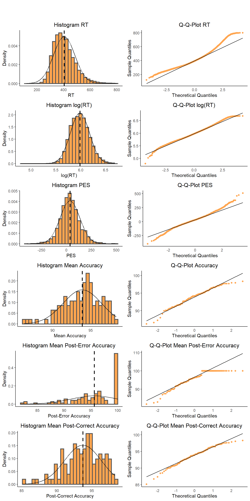
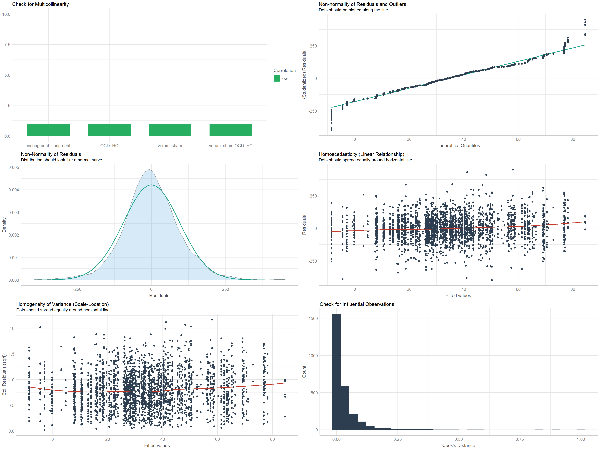
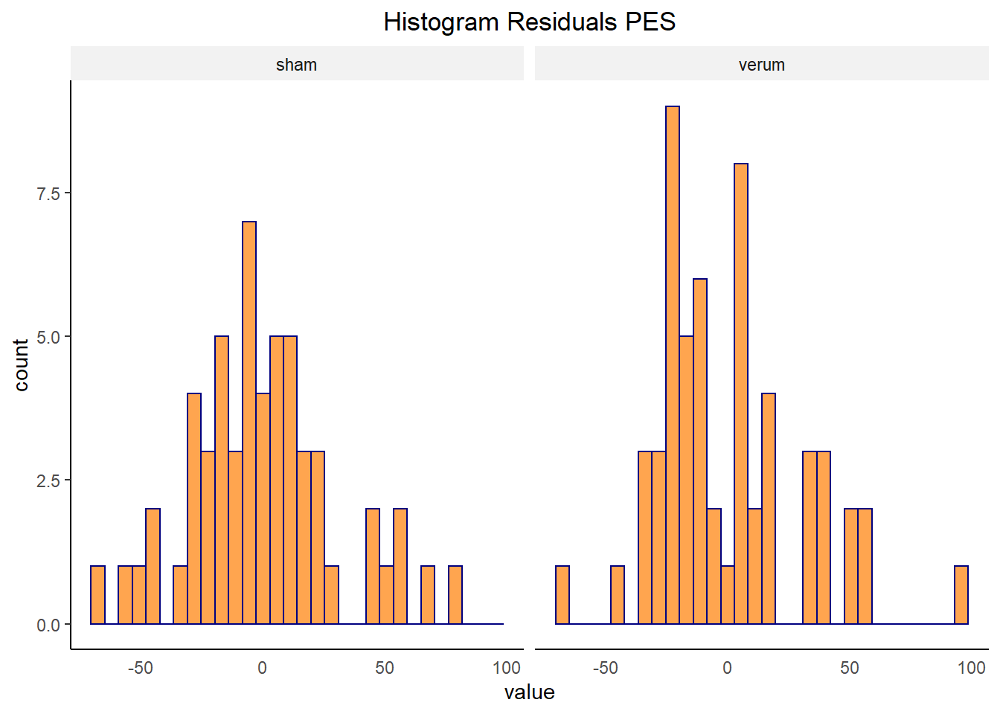
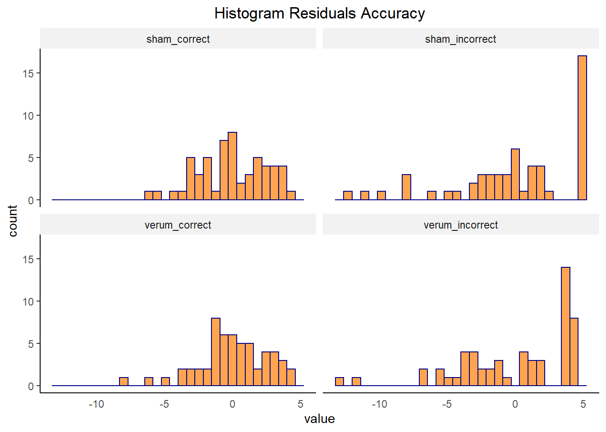

Behavioral Performance
Data Cleaning
# Load data
load(file = "./data/Single_Trial_Data.rda")
load(file = "./data/Feedback_Infos.rda")
# Exclude P_02 (due to retainer) and C_02 (as preregistered: patients are excluded with their match)
single_trial_data <- single_trial_data[single_trial_data$participant_id != "P_02" & single_trial_data$participant_id != "C_02",]
feedback_infos <- feedback_infos[feedback_infos$participant_id != "P_02" & feedback_infos$participant_id != "C_02",]
# Create some variables: numeric word accuracy, correctness of previous response, post-error accuracy (pea), and post-correct accuracy (pca)
# Important to do this before trial exclusion! Otherwise the previous trial in the table might not have been the previous trial in the task!
single_trial_data <- single_trial_data %>%
dplyr::mutate(
accuracy_numeric = ifelse(response_type == "correct", 1, 0),
accuracy_prev_trial = ifelse(lag(response_type == "correct", default = TRUE) == TRUE, "correct", "incorrect"),
pea = ifelse(lag(response_type == "correct") == FALSE & response_type == "correct", 1,
ifelse(lag(response_type == "correct") == FALSE & response_type == "incorrect", 0, NA)),
pca = ifelse(lag(response_type == "correct") == TRUE & response_type == "correct", 1,
ifelse(lag(response_type == "correct") == TRUE & response_type == "incorrect", 0, NA))
)
# For each first trial in a block, accuracy_prev_trial, pea, and pca cannot be determined; set these values to NA
single_trial_data[single_trial_data$trial == 1 | single_trial_data$trial == 81 |
single_trial_data$trial == 161 | single_trial_data$trial == 241|
single_trial_data$trial == 321 | single_trial_data$trial == 401, c("accuracy_prev_trial", "pea", "pca")] <- NA
# Exclude missing responses, RT outliers and trials with ERP artifacts
single_trial_data_clean <- single_trial_data %>%
dplyr::filter(
response_type != "miss" &
rt_invalid == FALSE &
!is.na(MFN_0_100_FCz)
) # (53093 of 53760 trials left)
# Create specific condition column (to exclude congruent errors if necessary)
single_trial_data_clean <- single_trial_data_clean %>%
dplyr::mutate(
condition = as.factor(paste0(stimulus_type, "_", response_type))
)
# Create column with single-trial PES (RTpost-error − RTpre-error for all CCEC sequences)
single_trial_data_clean$pes <- NA
# also make sure to exclude sequences where a trial was excluded in between (or when error occurred in first or last trial)
for (i in 3:(nrow(single_trial_data_clean)-1)) {
if (single_trial_data_clean[i,]$response_type == "incorrect" &
single_trial_data_clean[(i+1),]$response_type == "correct" &
single_trial_data_clean[(i-1),]$response_type == "correct" &
single_trial_data_clean[(i-2),]$response_type == "correct" &
single_trial_data_clean[(i+1),]$trial - single_trial_data_clean[(i-1),]$trial == 2) {
single_trial_data_clean[i,]$pes <- (single_trial_data_clean[(i+1),]$rt) - (single_trial_data_clean[(i-1),]$rt)
}
}
# For each last first and trial in a block, PES cannot be determined; set these values to NA
single_trial_data_clean[single_trial_data_clean$trial == 1 |
single_trial_data_clean$trial == 80 | single_trial_data_clean$trial == 81 |
single_trial_data_clean$trial == 160 | single_trial_data_clean$trial == 161|
single_trial_data_clean$trial == 240 | single_trial_data_clean$trial == 241|
single_trial_data_clean$trial == 320 | single_trial_data_clean$trial == 321|
single_trial_data_clean$trial == 400 | single_trial_data_clean$trial == 401|
single_trial_data_clean$trial == 480, "pes"] <- NA
# Add column for number of errors (needed as covariate later) - this variable contains total number of errors, not only those entering analysis (preferred according to JK)
single_trial_data_clean <- single_trial_data %>%
dplyr::group_by(participant_id, session) %>%
dplyr::summarize(number_errors = sum(response_type == "incorrect")) %>%
dplyr::ungroup(.) %>%
dplyr::left_join(single_trial_data_clean, ., by = c("participant_id", "session"))
# Standardize this variable
single_trial_data_clean$number_errors_standardized <- scale(single_trial_data_clean$number_errors, center = TRUE, scale = TRUE)
# Add column for number of speeding (needed as covariate later)
single_trial_data_clean <- feedback_infos[feedback_infos$block != 6,] %>%
dplyr::group_by(participant_id, session, feedback) %>%
dplyr::count(feedback, .drop = FALSE) %>%
dplyr::filter(feedback == " schneller") %>%
dplyr::rename(number_feedback_faster = n) %>%
dplyr::ungroup(.) %>%
dplyr::select(-feedback) %>%
dplyr::left_join(single_trial_data_clean, ., by = c("participant_id", "session"))
# Standardize this variable
single_trial_data_clean$number_feedback_faster_standardized <- scale(single_trial_data_clean$number_feedback_faster, center = TRUE, scale = TRUE)
# Make categorical variables factors
single_trial_data_clean$participant_id <- as.factor(single_trial_data_clean$participant_id)
single_trial_data_clean$group <- as.factor(single_trial_data_clean$group)
single_trial_data_clean$session <- as.factor(single_trial_data_clean$session)
single_trial_data_clean$stimulation <- as.factor(single_trial_data_clean$stimulation)
single_trial_data_clean$stimulus_type <- as.factor(single_trial_data_clean$stimulus_type)
single_trial_data_clean$response_type <- as.factor(single_trial_data_clean$response_type)
single_trial_data_clean$response_type_2nd <- as.factor(single_trial_data_clean$response_type_2nd)
single_trial_data_clean$accuracy_prev_trial <- as.factor(single_trial_data_clean$accuracy_prev_trial)
# Calculate aggregated data per subject for boxplots, outlier detection, and ANOVAs
df_aggregated_per_subject_rt <- single_trial_data_clean %>%
dplyr::group_by(participant_id, group, response_type, stimulus_type, stimulation, session) %>%
dplyr::summarize(
rt = mean(rt, na.rm = TRUE)
) %>%
dplyr::ungroup()
df_aggregated_per_subject_accuracy <- single_trial_data_clean %>%
dplyr::group_by(participant_id, group, stimulus_type, stimulation, session) %>%
dplyr::summarize(
accuracy_numeric = mean(accuracy_numeric, na.rm = TRUE)*100
) %>%
dplyr::ungroup()
df_aggregated_per_subject_pes_pea_pca <- single_trial_data_clean %>%
dplyr::group_by(participant_id, group, stimulation, session) %>%
dplyr::summarize(
pes = mean(pes, na.rm = TRUE),
pea = mean(pea, na.rm = TRUE)*100,
pca = mean(pca, na.rm = TRUE)*100
) %>%
dplyr::ungroup()Trials were excluded from all analyses if RT was shorter than 100 ms or longer than 800 ms or if the response in a trial was missing. We further discarded trials containing artifacts in the EEG, i.e., a voltage difference exceeding 50 μV between two consecutive sampling points or 200 μV within an epoch. Please see section “ERP Analysis” for percentage of excluded trials.
# Detect performance outliers (accuracy deviates more than 2/3 SD below/above group mean per condition)
performance_outliers <- df_aggregated_per_subject_accuracy %>%
dplyr::group_by(group, stimulus_type, stimulation) %>%
dplyr::mutate(outlier_2_sd = case_when(abs(accuracy_numeric - mean(accuracy_numeric, na.rm = TRUE)) <= 2 * sd(accuracy_numeric, na.rm = TRUE)~ FALSE, TRUE ~ TRUE),
outlier_3_sd = case_when(abs(accuracy_numeric - mean(accuracy_numeric, na.rm = TRUE)) <= 3 * sd(accuracy_numeric, na.rm = TRUE)~ FALSE, TRUE ~ TRUE)
) %>%
dplyr::filter(outlier_2_sd == TRUE) %>%
dplyr::ungroup()
# Display performance outliers
my_table_template(performance_outliers, caption = "Performance outliers (accuracy > 2/3 SD below/above group mean per condition (stimulus type x stimulation))")
# Calculate number of errors
number_of_errors <- single_trial_data %>%
dplyr::group_by(participant_id, group, session) %>%
dplyr::summarize(errors_total = sum(response_type == "incorrect"),
errors_analyzed = sum(response_type == "incorrect" & !is.nan(MFN_0_100_FCz) & rt_invalid == FALSE)
) %>%
dplyr::ungroup() %>%
dplyr::group_by(group) %>%
# Calculate M and SD of the variables
dplyr::summarize(across(-c(participant_id, session), list(mean,sd,min,max))) %>%
dplyr::ungroup()
# Display number of errors
my_table_template(number_of_errors,
caption = "Number of errors",
col_names = c("Group", "M", "SD", "min", "max", "M", "SD", "min", "max"),
header_above_config = c(" " = 1, "In total" = 4, "In analysis" = 4)
)| participant_id | group | stimulus_type | stimulation | session | accuracy_numeric | outlier_2_sd | outlier_3_sd |
|---|---|---|---|---|---|---|---|
| C_03 | HC | congruent | verum | T1 | 92.05 | TRUE | TRUE |
| C_07 | HC | congruent | sham | T1 | 94.56 | TRUE | TRUE |
| C_09 | HC | congruent | sham | T2 | 95.80 | TRUE | FALSE |
| C_19 | HC | incongruent | verum | T2 | 73.33 | TRUE | FALSE |
| C_29 | HC | incongruent | sham | T1 | 73.33 | TRUE | FALSE |
| C_29 | HC | incongruent | verum | T2 | 75.00 | TRUE | FALSE |
| P_07 | OCD | incongruent | verum | T1 | 82.35 | TRUE | FALSE |
| P_15 | OCD | congruent | sham | T1 | 93.86 | TRUE | TRUE |
| P_15 | OCD | congruent | verum | T2 | 96.15 | TRUE | FALSE |
| P_20 | OCD | incongruent | sham | T2 | 81.93 | TRUE | FALSE |
| P_24 | OCD | congruent | verum | T1 | 96.12 | TRUE | FALSE |
| Group | M | SD | min | max | M | SD | min | max |
|---|---|---|---|---|---|---|---|---|
| HC | 31.75 | 13.61 | 10 | 66 | 31.48 | 13.53 | 10 | 66 |
| OCD | 27.11 | 9.69 | 8 | 49 | 26.45 | 9.67 | 8 | 48 |
For some participants, accuracy in the task is more than 2 SD (N sessions = 11) or even 3 SD (N sessions = 3) below the group mean per condition (stimulus type x stimulation). But their accuracy is still quite good (> 70% in incongruent category), so these will not be excluded. Note that these information refer to the accuracy in the cleaned data, not the raw data. Being an outlier in task performance is also no exclusion criterion specified in the preregistration. No participant committed < 6 errors. Thus, no participant will be excluded based on this criterion.
# Create contingency table
feedback_contingency <- table(feedback_infos$feedback, feedback_infos$group)
# Display contingency table
my_table_template(feedback_contingency, caption = "Feedback in the task", row_names = TRUE)
# Calculate Chi-squared test
chisq.test(feedback_infos$feedback, feedback_infos$group)| HC | OCD | |
|---|---|---|
| genauer | 10 | 3 |
| schnell und genau | 136 | 113 |
| schneller | 134 | 165 |
Pearson's Chi-squared test
data: feedback_infos$feedback and feedback_infos$group
X-squared = 9.106, df = 2, p-value = 0.01054The groups differ in the feedback they received. The OCD group received more feedback emphasizing speed. This is ok and could be expected.
Data Inspection
Distribution
# Plot distribution RT
hist_rt <- ggplot(single_trial_data_clean, aes(x = rt)) +
geom_histogram(aes(y = ..density..), color="gray33", fill = "#8ea6b4", size = 1) +
stat_function(fun = dnorm, args=list(mean = mean(single_trial_data_clean$rt, na.rm = TRUE),
sd = sd(single_trial_data_clean$rt, na.rm = TRUE)), color = "black", size = 0.5) +
geom_vline(aes(xintercept = mean(rt, na.rm = TRUE)), color = "black", linetype = "dashed", size = 1) +
labs (title = "Histogram RT", x = "RT", y = "Density") +
my_figure_theme
qqplot_rt <- ggplot(single_trial_data_clean, aes(sample = rt)) +
stat_qq(color = "#8ea6b4") +
stat_qq_line() +
labs (title = "Q-Q-Plot RT", x = "Theoretical Quantiles", y = "Sample Quantiles") +
my_figure_theme
# Plot distribution log RT
hist_rt_log <- ggplot(single_trial_data_clean, aes(x = rt_log)) +
geom_histogram(aes(y = ..density..), color="gray33", fill = "#8ea6b4", size = 1) +
stat_function(fun = dnorm, args=list(mean = mean(single_trial_data_clean$rt_log, na.rm = TRUE),
sd = sd(single_trial_data_clean$rt_log, na.rm = TRUE)), color = "black", size = 0.5) +
geom_vline(aes(xintercept = mean(rt_log, na.rm = TRUE)), color = "black", linetype = "dashed", size = 1) +
labs (title = "Histogram log(RT)", x = "log(RT)", y = "Density") +
my_figure_theme
qqplot_rt_log <- ggplot(single_trial_data_clean, aes(sample = rt_log)) +
stat_qq(color = "#8ea6b4") +
stat_qq_line() +
labs (title = "Q-Q-Plot log(RT)", x = "Theoretical Quantiles", y = "Sample Quantiles") +
my_figure_theme
# Plot distribution PES
hist_pes <- ggplot(single_trial_data_clean[!is.na(single_trial_data_clean$pes),], aes(x = pes)) +
geom_histogram(aes(y = ..density..), color="gray33", fill = "#8ea6b4", size = 1) +
stat_function(fun = dnorm, args=list(mean = mean(single_trial_data_clean$pes, na.rm = TRUE),
sd = sd(single_trial_data_clean$pes, na.rm = TRUE)), color = "black", size = 0.5) +
geom_vline(aes(xintercept = mean(pes, na.rm = TRUE)), color = "black", linetype = "dashed", size = 1) +
labs (title = "Histogram PES", x = "PES", y = "Density") +
my_figure_theme
qqplot_pes <- ggplot(single_trial_data_clean[!is.na(single_trial_data_clean$pes),], aes(sample = pes)) +
stat_qq(color = "#8ea6b4") +
stat_qq_line() +
labs (title = "Q-Q-Plot PES", x = "Theoretical Quantiles", y = "Sample Quantiles") +
my_figure_theme
# Plot distribution accuracy (we first need the values aggregated per session and participant)
accuracy_histogram <- single_trial_data_clean %>%
dplyr::group_by(participant_id, session) %>%
dplyr::summarize(mean_accuracy = sum(accuracy_numeric) / length(participant_id) * 100) %>%
dplyr::ungroup()
hist_accuracy <- ggplot(accuracy_histogram, aes(x = mean_accuracy)) +
geom_histogram(aes(y = ..density..), color="gray33", fill = "#8ea6b4", size = 1) +
stat_function(fun = dnorm, args = list(mean = mean(accuracy_histogram$mean_accuracy, na.rm = TRUE),
sd = sd(accuracy_histogram$mean_accuracy, na.rm = TRUE)), color = "black", size = 0.5) +
geom_vline(aes(xintercept = mean(mean_accuracy, na.rm = TRUE)), color = "black", linetype = "dashed", size = 1) +
labs (title = "Histogram Mean Accuracy", x = "Mean Accuracy", y = "Density") +
my_figure_theme
qqplot_accuracy <- ggplot(accuracy_histogram, aes(sample = mean_accuracy)) +
stat_qq(color = "#8ea6b4") +
stat_qq_line() +
labs (title = "Q-Q-Plot Accuracy", x = "Theoretical Quantiles", y = "Sample Quantiles") +
my_figure_theme
# Plot distribution PEA
hist_pea <- ggplot(df_aggregated_per_subject_pes_pea_pca, aes(x = pea)) +
geom_histogram(aes(y = ..density..), color="gray33", fill = "#8ea6b4", size = 1) +
stat_function(fun = dnorm, args = list(mean = mean(df_aggregated_per_subject_pes_pea_pca$pea, na.rm = TRUE),
sd = sd(df_aggregated_per_subject_pes_pea_pca$pea, na.rm = TRUE)), color = "black", size = 0.5) +
geom_vline(aes(xintercept = mean(pea, na.rm = TRUE)), color = "black", linetype = "dashed", size = 1) +
labs (title = "Histogram Mean Post-Error Accuracy", x = "Post-Error Accuracy", y = "Density") +
my_figure_theme
qqplot_pea <- ggplot(df_aggregated_per_subject_pes_pea_pca, aes(sample = pea)) +
stat_qq(color = "#8ea6b4") +
stat_qq_line() +
labs (title = "Q-Q-Plot Mean Post-Error Accuracy", x = "Theoretical Quantiles", y = "Sample Quantiles") +
my_figure_theme
# Plot distribution PCA
hist_pca <- ggplot(df_aggregated_per_subject_pes_pea_pca, aes(x = pca)) +
geom_histogram(aes(y = ..density..), color="gray33", fill = "#8ea6b4", size = 1) +
stat_function(fun = dnorm, args = list(mean = mean(df_aggregated_per_subject_pes_pea_pca$pca, na.rm = TRUE),
sd = sd(df_aggregated_per_subject_pes_pea_pca$pca, na.rm = TRUE)), color = "black", size = 0.5) +
geom_vline(aes(xintercept = mean(pca, na.rm = TRUE)), color = "black", linetype = "dashed", size = 1) +
labs (title = "Histogram Mean Post-Correct Accuracy", x = "Post-Correct Accuracy", y = "Density") +
my_figure_theme
qqplot_pca <- ggplot(df_aggregated_per_subject_pes_pea_pca, aes(sample = pca)) +
stat_qq(color = "#8ea6b4") +
stat_qq_line() +
labs (title = "Q-Q-Plot Mean Post-Correct Accuracy", x = "Theoretical Quantiles", y = "Sample Quantiles") +
my_figure_theme
ggdraw() +
draw_plot(hist_rt, x = 0, y = .80, width = .5, height = .16) +
draw_plot(qqplot_rt, x = .5, y = .80, width = .5, height = .16) +
draw_plot(hist_rt_log, x = 0, y = .64, width = .5, height = .16) +
draw_plot(qqplot_rt_log, x = .5, y = .64, width = .5, height = .16) +
draw_plot(hist_pes, x = 0, y = .48, width = .5, height = .16) +
draw_plot(qqplot_pes, x = .5, y = .48, width = .5, height = .16) +
draw_plot(hist_accuracy, x = 0, y = .32, width = .5, height = .16) +
draw_plot(qqplot_accuracy,x = .5, y = .32, width = .5, height = .16) +
draw_plot(hist_pea, x = 0, y = .16, width = .5, height = .16) +
draw_plot(qqplot_pea, x = .5, y = .16, width = .5, height = .16) +
draw_plot(hist_pca, x = 0, y = 0, width = .5, height = .16) +
draw_plot(qqplot_pca, x = .5, y = 0, width = .5, height = .16) 
RT per participant
rt_per_participant <- ggplot(single_trial_data_clean, aes(x = response_type, y = rt)) +
geom_point(position = "jitter", aes(color = stimulus_type)) +
ggtitle("RT per participant") +
my_figure_theme +
facet_wrap(~ participant_id + session, ncol = 10) +
scale_color_manual(values = my_figure_colors)
rt_per_participant
Check RT Normality
For the single-trial data, Shapiro-Wilk is not suitable, as it always returns a significant result for such large samples (additionally, it can handle only samples up to 5000). Hence, we have to rely on visual inspection (see tab “Distribution”) and values of skewness and kurtosis (see below). Values for skewness and kurtosis between -2 and +2 are considered acceptable in order to prove normal univariate distribution (George & Mallery, 2010).
normality_rt <- round(data.frame(matrix(c(skewness(single_trial_data_clean$rt),
kurtosis(single_trial_data_clean$rt),
skewness(single_trial_data_clean$rt_log),
kurtosis(single_trial_data_clean$rt_log),
skewness(single_trial_data_clean[!is.na(single_trial_data_clean$pes),]$pes),
kurtosis(single_trial_data_clean[!is.na(single_trial_data_clean$pes),]$pes)),
nrow=2,ncol=3)),digits = 1)
rownames(normality_rt) <- c("Skewness","Kurtosis")
colnames(normality_rt) <- c("RT","log(RT)", "PES")
my_table_template(normality_rt, row_names = TRUE)| RT | log(RT) | PES | |
|---|---|---|---|
| Skewness | 0.9 | 0.2 | 0.1 |
| Kurtosis | 1.4 | 0.2 | 1.3 |
Determine RT transformation
LMM analysis of RT will be conducted on log-transformed RT values to meet the assumption of normally distributed residuals. The appropriate transformation was determined (or rather “validaated”, see notes below) using the Box–Cox procedure (Box & Cox, 1964).
# Arrange plots
par(mfrow = c(1, 2))
# Determine transformation of RT by estimating optimal lambda using Box–Cox procedure
bc_rt <- boxcox(rt ~ 1, data = single_trial_data_clean)
optlambda_rt <- bc_rt$x[which.max(bc_rt$y)]
# Determine transformation of PES by estimating optimal lambda using Box–Cox procedure
bc_pes <- boxcox(pes+1000 ~ 1, data = single_trial_data_clean[!is.na(single_trial_data_clean$pes),])
optlambda_pes <- bc_pes$x[which.max(bc_pes$y)]
# Reset plot layout
par(mfrow = c(1, 1)) For RT (left plot), the optimal lambda is -0.38, suggesting that log transformation (for lambda = 0) is appropriate. Actually, for lambda = -0.5, the most appropriate transformation would be Y^-0.5 = 1/(√(Y)), but this transformation does not seem very common to me. As our lambda is not far from 0, I chose log transformation, which is more commonly used. For PES (right plot), the optimal lambda is 0.75, suggesting that no transformation (for lambda = 1) is needed.
Descriptive Statistics
Means and CIs
##### RT
# Calculate descriptive statistics for RT per condition
descriptive_statistics_rt <- summarySEwithinO(
data = single_trial_data_clean,
measurevar = "rt",
withinvars = c("response_type", "stimulus_type", "stimulation", "session"),
betweenvars = "group",
idvar = "participant_id",
conf.interval = .95
) %>%
# Format confidence interval column
dplyr::mutate(
ci_rt = paste0("[", round(rt - ci, digits = 0),
", ", round(rt + ci, digits = 0), "]")) %>%
# Round RT means to zero decimals
dplyr::mutate_at("rt", round, digits = 0) %>%
# Select columns to be displayed
dplyr::select(c("group", "response_type", "stimulus_type", "stimulation", "session", "rt", "ci_rt", "ci"))
# Split and re-merge RT table to display both groups next to each other
descriptive_statistics_rt_display <- split(descriptive_statistics_rt, descriptive_statistics_rt$group)
descriptive_statistics_rt_display <- left_join(descriptive_statistics_rt_display$HC, descriptive_statistics_rt_display$OCD, by = c("stimulus_type", "response_type", "stimulation", "session"))
# Display descriptive statistics for RT (and select columns)
my_table_template(descriptive_statistics_rt_display[,c(2:7,10:11)],
caption = "Behavioral Performance: RT (in ms)",
col_names = c("Response type", "Stimulus type", "Stimulation", "Session", "M", "95% CI", "M", "95% CI"),
header_above_config = c(" " = 4, "HC" = 2, "OCD" = 2),
footnote_config = c(general = "Confidence intervals are adjusted for within-participant designs as described by Morey (2008).")
)
##### Accuracy
# Calculate descriptive statistics for accuracy per condition
descriptive_statistics_accuracy <- summarySEwithinO(
data = single_trial_data_clean,
measurevar = "accuracy_numeric",
withinvars = c("stimulus_type", "stimulation", "session"),
betweenvars = "group",
idvar = "participant_id",
conf.interval = .95
) %>%
# Multiply numeric values by 100 to obtain values in percent
dplyr::mutate_if(is.numeric, list(~ . * 100)
) %>%
# Format confidence interval column
dplyr::mutate(
ci_accuracy = paste0("[", round(accuracy_numeric - ci, digits = 2),
", ", round(accuracy_numeric + ci, digits = 2), "]")) %>%
# Round accuracy means to two decimals
dplyr::mutate_at("accuracy_numeric", round, digits = 2) %>%
# Select columns to be displayed
dplyr::select(c("group", "stimulus_type", "stimulation", "session", "accuracy_numeric", "ci_accuracy", "ci"))
# Split and re-merge accuracy table to display both groups next to each other
descriptive_statistics_accuracy_display <- split(descriptive_statistics_accuracy, descriptive_statistics_accuracy$group)
descriptive_statistics_accuracy_display <- left_join(descriptive_statistics_accuracy_display$HC, descriptive_statistics_accuracy_display$OCD, by = c("stimulus_type", "stimulation", "session"))
# Display descriptive statistics for Accuracy (and select columns)
my_table_template(descriptive_statistics_accuracy_display[,c(2:6,9:10)],
caption = "Behavioral Performance: Accuracy (in %)",
col_names = c("Stimulus type", "Stimulation", "Session", "M", "95% CI", "M", "95% CI"),
header_above_config = c(" " = 3, "HC" = 2, "OCD" = 2),
footnote_config = c(general = "Confidence intervals are adjusted for within-participant designs as described by Morey (2008).")
)
##### PES
# Calculate descriptive statistics for PES per condition
descriptive_statistics_pes <- summarySEwithinO(
data = single_trial_data_clean[!is.na(single_trial_data_clean$pes),],
measurevar = "pes",
withinvars = c("stimulation", "session"),
betweenvars = "group",
idvar = "participant_id",
conf.interval = .95
) %>%
# Format confidence interval column
dplyr::mutate(
ci_pes = paste0("[", round(pes - ci, digits = 0),
", ", round(pes + ci, digits = 0), "]")) %>%
# Round PES means to zero decimals
dplyr::mutate_at("pes", round, digits = 0)
# Split and re-merge PES table to display both groups next to each other
descriptive_statistics_pes_display <- split(descriptive_statistics_pes, descriptive_statistics_pes$group)
descriptive_statistics_pes_display <- left_join(descriptive_statistics_pes_display$HC, descriptive_statistics_pes_display$OCD, by = c("stimulation", "session"))
# Display descriptive statistics for PES (and select columns)
my_table_template(descriptive_statistics_pes_display[,c(2,3,5,10,13,18)],
caption = "Behavioral Performance: Post-Error Slowing (in %)",
col_names = c("Stimulation", "Session", "M", "95% CI", "M", "95% CI"),
header_above_config = c(" " = 2, "HC" = 2, "OCD" = 2),
footnote_config = c(general = "Confidence intervals are adjusted for within-participant designs as described by Morey (2008).")
)
##### PEA
# Calculate descriptive statistics for post-error accuracy per condition
descriptive_statistics_pea <- summarySEwithinO(
data = single_trial_data_clean[!is.na(single_trial_data_clean$pea),],
measurevar = "pea",
withinvars = c("stimulation", "session"),
betweenvars = "group",
idvar = "participant_id",
conf.interval = .95
) %>%
# Multiply numeric values by 100 to obtain values in percent
dplyr::mutate_if(is.numeric, list(~ . * 100)
) %>%
# Format confidence interval column
dplyr::mutate(
ci_pea = paste0("[", round(pea - ci, digits = 2),
", ", round(pea + ci, digits = 2), "]")) %>%
# Round PEA means to two decimals
dplyr::mutate_at("pea", round, digits = 2)
# Split and re-merge PEA table to display both groups next to each other
descriptive_statistics_pea_display <- split(descriptive_statistics_pea, descriptive_statistics_pea$group)
descriptive_statistics_pea_display <- left_join(descriptive_statistics_pea_display$HC, descriptive_statistics_pea_display$OCD, by = c("stimulation", "session"))
# Display descriptive statistics for PEA (and select columns)
my_table_template(descriptive_statistics_pea_display[,c(2,3,5,10,13,18)],
caption = "Behavioral Performance: Post-Error Accuracy (in %)",
col_names = c("Stimulation", "Session", "M", "95% CI", "M", "95% CI"),
header_above_config = c(" " = 2, "HC" = 2, "OCD" = 2),
footnote_config = c(general = "Confidence intervals are adjusted for within-participant designs as described by Morey (2008).")
)
##### PCA
# Calculate descriptive statistics for post-correct accuracy per condition
descriptive_statistics_pca <- summarySEwithinO(
data = single_trial_data_clean[!is.na(single_trial_data_clean$pca),],
measurevar = "pca",
withinvars = c("stimulation", "session"),
betweenvars = "group",
idvar = "participant_id",
conf.interval = .95
) %>%
# Multiply numeric values by 100 to obtain values in percent
dplyr::mutate_if(is.numeric, list(~ . * 100)
) %>%
# Format confidence interval column
dplyr::mutate(
ci_pca = paste0("[", round(pca - ci, digits = 2),
", ", round(pca + ci, digits = 2), "]")) %>%
# Round PCA means to two decimals
dplyr::mutate_at("pca", round, digits = 2)
# Split and re-merge PCA table to display both groups next to each other
descriptive_statistics_pca_display <- split(descriptive_statistics_pca, descriptive_statistics_pca$group)
descriptive_statistics_pca_display <- left_join(descriptive_statistics_pca_display$HC, descriptive_statistics_pca_display$OCD, by = c("stimulation", "session"))
# Display descriptive statistics for PCA (and select columns)
my_table_template(descriptive_statistics_pca_display[,c(2,3,5,10,13,18)],
caption = "Behavioral Performance: Post-Correct Accuracy (in %)",
col_names = c("Stimulation", "Session", "M", "95% CI", "M", "95% CI"),
header_above_config = c(" " = 2, "HC" = 2, "OCD" = 2),
footnote_config = c(general = "Confidence intervals are adjusted for within-participant designs as described by Morey (2008).")
)
# Calcuate means and CIs adjusted for within-participant factors (without session) - for plots
descriptive_statistics_rt_no_session <- summarySEwithinO(
data = single_trial_data_clean,
measurevar = "rt",
withinvars = c("response_type", "stimulus_type", "stimulation"),
betweenvars = "group",
idvar = "participant_id",
conf.interval = .95
)
descriptive_statistics_accuracy_no_session <- summarySEwithinO(
data = single_trial_data_clean,
measurevar = "accuracy_numeric",
withinvars = c("stimulus_type", "stimulation"),
betweenvars = "group",
idvar = "participant_id",
conf.interval = .95
) %>%
# Multiply numeric values by 100 to obtain values in percent
dplyr::mutate_if(is.numeric, list(~ . * 100))
descriptive_statistics_pes_no_session <- summarySEwithinO(
data = single_trial_data_clean[!is.na(single_trial_data_clean$pes),],
measurevar = "pes",
withinvars = "stimulation",
betweenvars = "group",
idvar = "participant_id",
conf.interval = .95
)
descriptive_statistics_pea_no_session <- summarySEwithinO(
data = single_trial_data_clean[!is.na(single_trial_data_clean$pea),],
measurevar = "pea",
withinvars = "stimulation",
betweenvars = "group",
idvar = "participant_id",
conf.interval = .95
) %>%
# Multiply numeric values by 100 to obtain values in percent
dplyr::mutate_if(is.numeric, list(~ . * 100))
descriptive_statistics_pca_no_session <- summarySEwithinO(
data = single_trial_data_clean[!is.na(single_trial_data_clean$pca),],
measurevar = "pca",
withinvars = "stimulation",
betweenvars = "group",
idvar = "participant_id",
conf.interval = .95
) %>%
# Multiply numeric values by 100 to obtain values in percent
dplyr::mutate_if(is.numeric, list(~ . * 100))| Response type | Stimulus type | Stimulation | Session | M | 95% CI | M | 95% CI |
|---|---|---|---|---|---|---|---|
| correct | congruent | sham | T1 | 370 | [368, 372] | 396 | [393, 398] |
| correct | congruent | sham | T2 | 376 | [374, 378] | 384 | [381, 386] |
| correct | congruent | verum | T1 | 385 | [382, 387] | 400 | [398, 403] |
| correct | congruent | verum | T2 | 359 | [357, 361] | 371 | [369, 373] |
| correct | incongruent | sham | T1 | 434 | [431, 436] | 451 | [449, 454] |
| correct | incongruent | sham | T2 | 432 | [430, 434] | 438 | [435, 441] |
| correct | incongruent | verum | T1 | 447 | [445, 450] | 455 | [452, 458] |
| correct | incongruent | verum | T2 | 425 | [422, 427] | 427 | [425, 429] |
| incorrect | congruent | sham | T1 | 344 | [318, 371] | 338 | [316, 361] |
| incorrect | congruent | sham | T2 | 359 | [320, 398] | 383 | [355, 411] |
| incorrect | congruent | verum | T1 | 334 | [309, 359] | 355 | [329, 380] |
| incorrect | congruent | verum | T2 | 322 | [288, 356] | 356 | [325, 386] |
| incorrect | incongruent | sham | T1 | 327 | [322, 332] | 341 | [335, 348] |
| incorrect | incongruent | sham | T2 | 352 | [345, 360] | 347 | [339, 354] |
| incorrect | incongruent | verum | T1 | 344 | [336, 352] | 347 | [340, 355] |
| incorrect | incongruent | verum | T2 | 328 | [323, 333] | 340 | [335, 346] |
| Note: | |||||||
| Confidence intervals are adjusted for within-participant designs as described by Morey (2008). |
| Stimulus type | Stimulation | Session | M | 95% CI | M | 95% CI |
|---|---|---|---|---|---|---|
| congruent | sham | T1 | 98.68 | [98.24, 99.12] | 98.46 | [98.02, 98.89] |
| congruent | sham | T2 | 98.85 | [98.46, 99.23] | 98.61 | [98.16, 99.05] |
| congruent | verum | T1 | 98.54 | [98.12, 98.96] | 98.08 | [97.55, 98.6] |
| congruent | verum | T2 | 98.97 | [98.58, 99.36] | 98.70 | [98.3, 99.1] |
| incongruent | sham | T1 | 86.51 | [85.23, 87.79] | 91.44 | [90.45, 92.43] |
| incongruent | sham | T2 | 88.74 | [87.63, 89.84] | 90.09 | [88.97, 91.2] |
| incongruent | verum | T1 | 90.10 | [89.06, 91.15] | 90.48 | [89.38, 91.59] |
| incongruent | verum | T2 | 86.16 | [84.87, 87.45] | 89.31 | [88.23, 90.4] |
| Note: | ||||||
| Confidence intervals are adjusted for within-participant designs as described by Morey (2008). |
| Stimulation | Session | M | 95% CI | M | 95% CI |
|---|---|---|---|---|---|
| sham | T1 | 37 | [27, 48] | 46 | [33, 59] |
| sham | T2 | 21 | [9, 32] | 33 | [20, 46] |
| verum | T1 | 43 | [30, 56] | 55 | [41, 69] |
| verum | T2 | 22 | [11, 32] | 27 | [17, 38] |
| Note: | |||||
| Confidence intervals are adjusted for within-participant designs as described by Morey (2008). |
| Stimulation | Session | M | 95% CI | M | 95% CI |
|---|---|---|---|---|---|
| sham | T1 | 95.13 | [92.94, 97.31] | 95.10 | [92.67, 97.54] |
| sham | T2 | 93.67 | [91.2, 96.15] | 93.32 | [90.44, 96.19] |
| verum | T1 | 94.95 | [92.62, 97.29] | 95.98 | [93.76, 98.2] |
| verum | T2 | 94.85 | [92.53, 97.17] | 96.36 | [94.35, 98.36] |
| Note: | |||||
| Confidence intervals are adjusted for within-participant designs as described by Morey (2008). |
| Stimulation | Session | M | 95% CI | M | 95% CI |
|---|---|---|---|---|---|
| sham | T1 | 92.33 | [91.53, 93.13] | 94.97 | [94.36, 95.57] |
| sham | T2 | 93.81 | [93.14, 94.48] | 94.36 | [93.67, 95.04] |
| verum | T1 | 94.26 | [93.61, 94.9] | 94.15 | [93.45, 94.85] |
| verum | T2 | 92.33 | [91.53, 93.12] | 93.79 | [93.12, 94.47] |
| Note: | |||||
| Confidence intervals are adjusted for within-participant designs as described by Morey (2008). |
Plot without session
# Create plot RT
plot_rt <- ggplot() +
geom_boxplot(data = df_aggregated_per_subject_rt, aes(x = stimulation, y = rt, fill = group), outlier.size =0.3)+
geom_point(data = descriptive_statistics_rt_no_session, aes(x = stimulation, y = rt, colour = group),
position = position_dodge(width = 0.7), shape = 15, size = 1) +
geom_errorbar(data = descriptive_statistics_rt_no_session, aes(x = stimulation, ymax = rt + ci, ymin = rt - ci, colour = group),
position = position_dodge(width = 0.7), width = 0, size = 0.5) +
geom_line(data = descriptive_statistics_rt_no_session, aes(x = stimulation, y = rt, group = group, color = group),
position = position_dodge(width = 0.7), linetype = 3, size = 0.5) +
scale_colour_manual(values = c("#b23f00", "#ff9b64"), name = "Group:") +
scale_fill_manual(values = my_figure_colors, name = "Group:") +
facet_wrap(~response_type + stimulus_type, nrow = 1) +
my_figure_theme +
labs(x = "\nStimulation condition", y = "RT (ms)")
# Create plot accuracy
plot_accuracy <- ggplot() +
geom_boxplot(data = df_aggregated_per_subject_accuracy, aes(x = stimulation, y = accuracy_numeric, fill = group), outlier.size =0.3)+
geom_point(data = descriptive_statistics_accuracy_no_session, aes(x = stimulation, y = accuracy_numeric, colour = group),
position = position_dodge(width = 0.7), shape = 15, size = 1) +
geom_errorbar(data = descriptive_statistics_accuracy_no_session, aes(x = stimulation, ymax = accuracy_numeric + ci, ymin = accuracy_numeric - ci, colour = group),
position = position_dodge(width = 0.7), width = 0, size = 0.5) +
geom_line(data = descriptive_statistics_accuracy_no_session, aes(x = stimulation, y = accuracy_numeric, group = group, color = group),
position = position_dodge(width = 0.7), linetype = 3, size = 0.5) +
scale_colour_manual(values = c("#b23f00", "#ff9b64"), name = "Group:") +
scale_fill_manual(values = my_figure_colors, name = "Group:") +
facet_wrap(~stimulus_type, nrow = 1) +
my_figure_theme +
labs(x = "\nStimulation condition", y = "Accuracy (%)")
# Create plot PES
plot_pes <- ggplot() +
geom_boxplot(data = df_aggregated_per_subject_pes_pea_pca, aes(x = stimulation, y = pes, fill = group), outlier.size =0.3)+
geom_point(data = descriptive_statistics_pes_no_session, aes(x = stimulation, y = pes, colour = group),
position = position_dodge(width = 0.7), shape = 15, size = 1) +
geom_errorbar(data = descriptive_statistics_pes_no_session, aes(x = stimulation, ymax = pes + ci, ymin = pes - ci, colour = group),
position = position_dodge(width = 0.7), width = 0, size = 0.5) +
geom_line(data = descriptive_statistics_pes_no_session, aes(x = stimulation, y = pes, group = group, color = group),
position = position_dodge(width = 0.7), linetype = 3, size = 0.5) +
scale_colour_manual(values = c("#b23f00", "#ff9b64"), name = "Group:") +
scale_fill_manual(values = my_figure_colors, name = "Group:") +
my_figure_theme +
labs(x = "\nStimulation condition", y = "Post-error slowing (ms)")
# Create plot PEA
plot_pea <- ggplot() +
geom_boxplot(data = df_aggregated_per_subject_pes_pea_pca, aes(x = stimulation, y = pea, fill = group), outlier.size =0.3)+
geom_point(data = descriptive_statistics_pea_no_session, aes(x = stimulation, y = pea, colour = group),
position = position_dodge(width = 0.7), shape = 15, size = 1) +
geom_errorbar(data = descriptive_statistics_pea_no_session, aes(x = stimulation, ymax = pea + ci, ymin = pea - ci, colour = group),
position = position_dodge(width = 0.7), width = 0, size = 0.5) +
geom_line(data = descriptive_statistics_pea_no_session, aes(x = stimulation, y = pea, group = group, color = group),
position = position_dodge(width = 0.7), linetype = 3, size = 0.5) +
scale_colour_manual(values = c("#b23f00", "#ff9b64"), name = "Group:") +
scale_fill_manual(values = my_figure_colors, name = "Group:") +
my_figure_theme +
labs(x = "\nStimulation condition", y = "Post-error accuracy (ms)")
# Create plot PCA
plot_pca <- ggplot() +
geom_boxplot(data = df_aggregated_per_subject_pes_pea_pca, aes(x = stimulation, y = pca, fill = group), outlier.size =0.3)+
geom_point(data = descriptive_statistics_pca_no_session, aes(x = stimulation, y = pca, colour = group),
position = position_dodge(width = 0.7), shape = 15, size = 1) +
geom_errorbar(data = descriptive_statistics_pca_no_session, aes(x = stimulation, ymax = pca + ci, ymin = pca - ci, colour = group),
position = position_dodge(width = 0.7), width = 0, size = 0.5) +
geom_line(data = descriptive_statistics_pca_no_session, aes(x = stimulation, y = pca, group = group, color = group),
position = position_dodge(width = 0.7), linetype = 3, size = 0.5) +
scale_colour_manual(values = c("#b23f00", "#ff9b64"), name = "Group:") +
scale_fill_manual(values = my_figure_colors, name = "Group:") +
my_figure_theme +
labs(x = "\nStimulation condition", y = "Post-correct accuracy (ms)")
# Create common legend for plots (function from http://www.sthda.com/english/wiki/wiki.php?id_contents=7930#add-a-common-legend-for-multiple-ggplot2-graphs)
get_legend <- function(myggplot) {
tmp <- ggplot_gtable(ggplot_build(myggplot))
leg <- which(sapply(tmp$grobs, function(x) x$name) == "guide-box")
legend <- tmp$grobs[[leg]]
return(legend)
}
legend <- get_legend(plot_rt)
# Remove previous legends from plots
plot_rt <- plot_rt + theme(legend.position = "none")
plot_accuracy <- plot_accuracy + theme(legend.position = "none")
plot_pes <- plot_pes + theme(legend.position = "none")
plot_pea <- plot_pea + theme(legend.position = "none")
plot_pca <- plot_pca + theme(legend.position = "none")
# Arrange plots
figure_behav <- ggdraw() +
draw_plot(plot_rt, x = 0, y = .5, width = .65, height = .5) +
draw_plot(plot_accuracy, x = .65, y = .5, width = .35, height = .5) +
draw_plot(plot_pes, x = 0, y = .15, width = .33, height = .4) +
draw_plot(plot_pea, x = .33, y = .15, width = .33, height = .4) +
draw_plot(plot_pca, x = .66, y = .15, width = .33, height = .4) +
draw_plot(legend, x = .27, y = .05, width = .5, height = .1) +
draw_plot_label(c("A", "B", "C", "D", "E"), c(0, .65, 0, .33, .66), c(1, 1, .585, .585, .585), size = 15)
# Save plot
ggsave("./figures/figure_behav.tiff", width = 16, height = 15, units = "cm", dpi=600, compression = "lzw")
# Display plot
figure_behav
Note. (A) RT, (B) accuracy, (c) post-error slowing and (D) post-error accuracy, and (E) post-correct accuracy in the flanker task are shown as a function of stimulus type, response type, stimulation condition, and group. Means and 95% confidence intervals (shown in orange/red) were calculated based on single-trial data. Boxplots are based on data aggregated by participant. CIs are adjusted for within-participant designs as described by Morey (2008).
To quantify PES robust, we used the method proposed by Dutilh et al. (2012). See section LMM PES for details. We further quantified accuracy following incorrect and correct responses (post-error accuracy and post-correct accuracy).
Plot with session
# Create plot RT
plot_rt_session <- ggplot() +
geom_boxplot(data = df_aggregated_per_subject_rt, aes(x = stimulation, y = rt, fill = group), outlier.size =0.3)+
geom_point(data = descriptive_statistics_rt, aes(x = stimulation, y = rt, colour = group),
position = position_dodge(width = 0.7), shape = 15, size = 1) +
geom_errorbar(data = descriptive_statistics_rt, aes(x = stimulation, ymax = rt + ci, ymin = rt - ci, colour = group),
position = position_dodge(width = 0.7), width = 0, size = 0.5) +
geom_line(data = descriptive_statistics_rt, aes(x = stimulation, y = rt, group = group, color = group),
position = position_dodge(width = 0.7), linetype = 3, size = 0.5) +
scale_colour_manual(values = c("#b23f00", "#ff9b64"), name = "Group:") +
scale_fill_manual(values = my_figure_colors, name = "Group:") +
facet_wrap(~response_type + stimulus_type + session, nrow = 1) +
my_figure_theme +
labs(x = "\nStimulation condition", y = "RT (ms)")
# Create plot accuracy
plot_accuracy_session <- ggplot() +
geom_boxplot(data = df_aggregated_per_subject_accuracy, aes(x = stimulation, y = accuracy_numeric, fill = group), outlier.size =0.3)+
geom_point(data = descriptive_statistics_accuracy, aes(x = stimulation, y = accuracy_numeric, colour = group),
position = position_dodge(width = 0.7), shape = 15, size = 1) +
geom_errorbar(data = descriptive_statistics_accuracy, aes(x = stimulation, ymax = accuracy_numeric + ci, ymin = accuracy_numeric - ci, colour = group),
position = position_dodge(width = 0.7), width = 0, size = 0.5) +
geom_line(data = descriptive_statistics_accuracy, aes(x = stimulation, y = accuracy_numeric, group = group, color = group),
position = position_dodge(width = 0.7), linetype = 3, size = 0.5) +
scale_colour_manual(values = c("#b23f00", "#ff9b64"), name = "Group:") +
scale_fill_manual(values = my_figure_colors, name = "Group:") +
facet_wrap(~stimulus_type + session, nrow = 1) +
my_figure_theme +
labs(x = "\nStimulation condition", y = "Accuracy (%)")
# Create plot PES
plot_pes_session <- ggplot() +
geom_boxplot(data = df_aggregated_per_subject_pes_pea_pca, aes(x = stimulation, y = pes, fill = group), outlier.size =0.3)+
geom_point(data = descriptive_statistics_pes, aes(x = stimulation, y = pes, colour = group),
position = position_dodge(width = 0.7), shape = 15, size = 1) +
geom_errorbar(data = descriptive_statistics_pes, aes(x = stimulation, ymax = pes + ci, ymin = pes - ci, colour = group),
position = position_dodge(width = 0.7), width = 0, size = 0.5) +
geom_line(data = descriptive_statistics_pes, aes(x = stimulation, y = pes, group = group, color = group),
position = position_dodge(width = 0.7), linetype = 3, size = 0.5) +
scale_colour_manual(values = c("#b23f00", "#ff9b64"), name = "Group:") +
scale_fill_manual(values = my_figure_colors, name = "Group:") +
facet_wrap(~session, nrow = 1) +
my_figure_theme +
labs(x = "\nStimulation condition", y = "Post-error slowing (ms)")
# Create plot PEA
plot_pea_session <- ggplot() +
geom_boxplot(data = df_aggregated_per_subject_pes_pea_pca, aes(x = stimulation, y = pea, fill = group), outlier.size =0.3)+
geom_point(data = descriptive_statistics_pea, aes(x = stimulation, y = pea, colour = group),
position = position_dodge(width = 0.7), shape = 15, size = 1) +
geom_errorbar(data = descriptive_statistics_pea, aes(x = stimulation, ymax = pea + ci, ymin = pea - ci, colour = group),
position = position_dodge(width = 0.7), width = 0, size = 0.5) +
geom_line(data = descriptive_statistics_pea, aes(x = stimulation, y = pea, group = group, color = group),
position = position_dodge(width = 0.7), linetype = 3, size = 0.5) +
scale_colour_manual(values = c("#b23f00", "#ff9b64"), name = "Group:") +
scale_fill_manual(values = my_figure_colors, name = "Group:") +
facet_wrap(~session, nrow = 1) +
my_figure_theme +
labs(x = "\nStimulation condition", y = "Post-error accuracy (ms)")
# Create plot PCA
plot_pca_session <- ggplot() +
geom_boxplot(data = df_aggregated_per_subject_pes_pea_pca, aes(x = stimulation, y = pca, fill = group), outlier.size =0.3)+
geom_point(data = descriptive_statistics_pca, aes(x = stimulation, y = pca, colour = group),
position = position_dodge(width = 0.7), shape = 15, size = 1) +
geom_errorbar(data = descriptive_statistics_pca, aes(x = stimulation, ymax = pca + ci, ymin = pca - ci, colour = group),
position = position_dodge(width = 0.7), width = 0, size = 0.5) +
geom_line(data = descriptive_statistics_pca, aes(x = stimulation, y = pca, group = group, color = group),
position = position_dodge(width = 0.7), linetype = 3, size = 0.5) +
scale_colour_manual(values = c("#b23f00", "#ff9b64"), name = "Group:") +
scale_fill_manual(values = my_figure_colors, name = "Group:") +
facet_wrap(~session, nrow = 1) +
my_figure_theme +
labs(x = "\nStimulation condition", y = "Post-correct accuracy (ms)")
# Create common legend for plots (function from http://www.sthda.com/english/wiki/wiki.php?id_contents=7930#add-a-common-legend-for-multiple-ggplot2-graphs)
get_legend <- function(myggplot) {
tmp <- ggplot_gtable(ggplot_build(myggplot))
leg <- which(sapply(tmp$grobs, function(x) x$name) == "guide-box")
legend <- tmp$grobs[[leg]]
return(legend)
}
legend <- get_legend(plot_rt_session)
# Remove previous legends from plots
plot_rt_session <- plot_rt_session + theme(legend.position = "none")
plot_accuracy_session <- plot_accuracy_session + theme(legend.position = "none")
plot_pes_session <- plot_pes_session + theme(legend.position = "none")
plot_pea_session <- plot_pea_session + theme(legend.position = "none")
plot_pca_session <- plot_pca_session + theme(legend.position = "none")
# Arrange plots
figure_behav_session <- ggdraw() +
draw_plot(plot_rt_session, x = 0, y = .66, width = 1, height = .33) +
draw_plot(plot_accuracy_session, x = 0, y = .33, width = .5, height = .33) +
draw_plot(legend, x = .6, y = .36, width = .5, height = .33) +
draw_plot(plot_pes_session, x = 0, y = .0, width = .33, height = .33) +
draw_plot(plot_pea_session, x = .33, y = .0, width = .33, height = .33) +
draw_plot(plot_pca_session, x = .66, y = .0, width = .33, height = .33) +
draw_plot_label(c("A", "B", "C","D","E"), c(0, 0, 0, 0.33, 0.66), c(1, .66, .33, .33, .33), size = 15)
# Save plot
ggsave("./figures/figure_behav_session.tiff", width = 20, height = 25, units = "cm", dpi=600, compression = "lzw")
# Display plot
figure_behav_session
Note. (A) RT, (B) accuracy, (c) post-error slowing and (D) post-error accuracy, and (E) post-correct accuracy in the flanker task are shown as a function of stimulation condition, group, and session. Means and 95% confidence intervals (shown in orange/red) were calculated based on single-trial data. Boxplots are based on data aggregated by participant. CIs are adjusted for within-participant designs as described by Morey (2008).
To quantify PES robust, we used the method proposed by Dutilh et al. (2012). See section LMM PES for details. We further quantified accuracy following incorrect and correct responses (post-error accuracy and post-correct accuracy).
(G)LMM Analyses
RT, PES, and accuracy were modeled using two linear mixed-effects models (LMM) and a binomial generalized linear mixed-effects model (GLMM), respectively.
Fixed effects
Stimulus type (congruent, incongruent), group (HC, OCD), stimulation (verum, sham), and, where applicable (= for RT), response type (correct, incorrect) were specified as fixed factors. Fixed effects were coded using effect coding (this equals sliding difference contrasts for two levels for factors with two levels or sum coding/2), such that the intercept reflects the grand mean across all conditions and differences in means between factor levels are tested. Fixed effects were not eliminated using model comparison techniques because they correspond to the original experimental design and a priori hypotheses.
I specified models that predict all main effects and interactions only with the factors stimulation and group. This is the most sparse model structure for testing the effects of interest.
Random effects
Participants were specified as random factors. The random-effects structure for each model was determined based on the procedure proposed by Bates, Kliegl, et al. (2015). We started with the maximal random-effects structure, including random intercepts for participants, as well as random slopes for all main effects and interactions specified as fixed effects that were justified by the design. If the model with the maximal random-effects structure would not converge, correlations of the random terms were set to zero. We performed a principal components analysis on the random-effects variance–covariance estimates to determine the number of components supported by the data and removed random effects explaining zero variance to prevent overparametrization (Matuschek et al., 2017).
# Define contrasts (sliding difference contrasts)
contrasts(single_trial_data_clean$stimulation) <- contr.sdif(2)
contrasts(single_trial_data_clean$group) <- contr.sdif(2)
contrasts(single_trial_data_clean$response_type) <- contr.sdif(2)
contrasts(single_trial_data_clean$stimulus_type) <- contr.sdif(2)
contrasts(single_trial_data_clean$accuracy_prev_trial) <- contr.sdif(2)
contrasts(single_trial_data_clean$session) <- contr.sdif(2)
# Add contrasts as numerical covariates via model matrix* (specify all possible contasts for now)
model_matrix <- model.matrix(~ stimulation * group * (response_type + stimulus_type), single_trial_data_clean)
# Attach the model matrix (8 columns) to the dataframe
single_trial_data_clean[, (ncol(single_trial_data_clean) + 1):(ncol(single_trial_data_clean) + 12)] <- model_matrix
# Assign descriptive names to the contrasts
names(single_trial_data_clean)[(ncol(single_trial_data_clean) - 11):ncol(single_trial_data_clean)] <- c("Grand Mean", "verum_sham", "OCD_HC", "incorrect_correct", "incongruent_congruent", "verum_sham:OCD_HC", "verum_sham:incorrect_correct", "verum_sham:incongruent_congruent", "OCD_HC:incorrect_correct" , "OCD_HC:incongruent_congruent", "verum_sham:OCD_HC:incorrect_correct", "verum_sham:OCD_HC:incongruent_congruent")
# *Note: For the random effects, we needed to enter the separate random effect terms in the models to enable
# double-bar notation (||). This allows fitting a model that sets correlations of the random terms to zero.RT
LMM
Even though congruent errors were very rare (0.7% of all trials; N = 369 trials), I did not exclude them from LMM RT analysis. In order to not loose power, I do not want to exclude congruent errors from analyses in general (e.g. EEG, accuracy), which is ok as I will not add stimulus type as factor there. For the following reasons it should also be ok to not exclude congruent errors from LMM RT analysis:
LMMs take into account this imbalance due to different number of observations per cell and thus different uncertainty. So, it should be not problematic that congruent errors are rare.
Additionally, it should be ok that one cell only has few observations, as the interaction response type * stimulus type is not included in the model but only main effects. Not including this interaction in the model is ok, as it is of no interest to our research questions.
I thought about whether the effect of stimulus type could confound effect of response type, as errors occur mostly in incongruent trials whereas correct responses are occur in both congruent and incongruent trials. But actually, when both factors are included, the respective main effects reflect the effect of each factor when controlling for the other.
For the aggregation-based ANOVA on RT, I will excluded congruent errors.
# Run model with maximal random-effects structure
LMM_rt <- lmer(rt_log ~ verum_sham * OCD_HC * (incorrect_correct + incongruent_congruent) +
(1 + verum_sham * (incorrect_correct + incongruent_congruent) | participant_id),
data = single_trial_data_clean,
REML = TRUE,
control = lmerControl(optimizer = "bobyqa")
)
# Check model output
# summary(LMM_rt) # Model does converge
# isSingular(LMM_rt) # Check for singular model fit (i.e., dimensions of the variance-covariance matrix have been estimated as exactly zero): FALSE
# Check PCA of random-effects variance-covariance estimates
# summary(rePCA(LMM_rt)) # All terms explain variance
# Display results (fixed effects)
tab_model(LMM_rt,
dv.labels = "log(RT)", show.stat = TRUE, show.icc = TRUE, show.r2 = TRUE,
show.re.var = TRUE, show.ngroups = TRUE, string.est = "b", string.stat = "t value",
string.ci = "95 % CI", string.p = "p value", p.val = "satterthwaite", wrap.labels = 80, digits.re = 3
)| log(RT) | ||||
|---|---|---|---|---|
| Predictors | b | 95 % CI | t value | p value |
| (Intercept) | 5.88 | 5.86 – 5.90 | 553.13 | <0.001 |
| verum_sham | -0.01 | -0.02 – 0.01 | -0.62 | 0.537 |
| OCD_HC | 0.03 | -0.02 – 0.07 | 1.22 | 0.227 |
| incorrect_correct | -0.23 | -0.25 – -0.21 | -22.35 | <0.001 |
| incongruent_congruent | 0.14 | 0.13 – 0.15 | 30.14 | <0.001 |
| verum_sham * OCD_HC | 0.00 | -0.03 – 0.04 | 0.15 | 0.882 |
| verum_sham * incorrect_correct | -0.00 | -0.02 – 0.02 | -0.14 | 0.889 |
| verum_sham * incongruent_congruent | 0.01 | -0.00 – 0.02 | 1.57 | 0.121 |
| OCD_HC * incorrect_correct | -0.00 | -0.04 – 0.04 | -0.11 | 0.914 |
| OCD_HC * incongruent_congruent | -0.02 | -0.04 – -0.00 | -2.00 | 0.050 |
| (verum_sham * OCD_HC) * incorrect_correct | 0.04 | -0.00 – 0.08 | 1.87 | 0.067 |
| (verum_sham * OCD_HC) * incongruent_congruent | -0.01 | -0.03 – 0.01 | -1.17 | 0.249 |
| Random Effects | ||||
| σ2 | 0.022 | |||
| τ00 participant_id | 0.006 | |||
| τ11 participant_id.verum_sham | 0.004 | |||
| τ11 participant_id.incorrect_correct | 0.005 | |||
| τ11 participant_id.incongruent_congruent | 0.001 | |||
| τ11 participant_id.verum_sham:incorrect_correct | 0.004 | |||
| τ11 participant_id.verum_sham:incongruent_congruent | 0.001 | |||
| ρ01 | 0.021 | |||
| 0.099 | ||||
| -0.202 | ||||
| -0.141 | ||||
| 0.218 | ||||
| ICC | 0.271 | |||
| N participant_id | 56 | |||
| Observations | 53093 | |||
| Marginal R2 / Conditional R2 | 0.180 / 0.403 | |||
Responses are faster in the congruent than in the incongruent condition. Incorrect responses are faster than correct responses. There is no evidence for an effect of group or stimulation. Trends for the following interactions are present: group:stimulus_congruence and stimulation:group:response_type.
LMM nested
# Run model with maximal random-effects structure
LMM_rt_group <- lmer(rt_log ~ group/stimulation * (incorrect_correct + incongruent_congruent) +
(1 + verum_sham * (incorrect_correct + incongruent_congruent) | participant_id),
data = single_trial_data_clean,
REML = TRUE,
control = lmerControl(optimizer = "bobyqa")
)
# Check model output
# summary(LMM_rt_group) # Model does converge
# isSingular(LMM_rt_group) # Check for singular model fit (i.e., dimensions of the variance-covariance matrix have been estimated as exactly zero): FALSE
# Check PCA of random-effects variance-covariance estimates
# summary(rePCA(LMM_rt_group)) # All terms explain variance
# Display results (fixed effects)
tab_model(LMM_rt_group,
dv.labels = "log(RT)", show.stat = TRUE, show.icc = TRUE, show.r2 = TRUE,
show.re.var = TRUE, show.ngroups = TRUE, string.est = "b", string.stat = "t value",
string.ci = "95 % CI", string.p = "p value", p.val = "satterthwaite", wrap.labels = 80, digits.re = 3
)| log(RT) | ||||
|---|---|---|---|---|
| Predictors | b | 95 % CI | t value | p value |
| (Intercept) | 5.88 | 5.86 – 5.90 | 553.14 | <0.001 |
| group2-1 | 0.03 | -0.02 – 0.07 | 1.22 | 0.227 |
| incorrect_correct | -0.23 | -0.25 – -0.21 | -22.35 | <0.001 |
| incongruent_congruent | 0.14 | 0.13 – 0.15 | 30.14 | <0.001 |
| groupHC:stimulation2-1 | -0.01 | -0.03 – 0.02 | -0.55 | 0.587 |
| groupOCD:stimulation2-1 | -0.00 | -0.03 – 0.02 | -0.33 | 0.741 |
| group2-1:incorrect_correct | -0.00 | -0.04 – 0.04 | -0.11 | 0.914 |
| group2-1:incongruent_congruent | -0.02 | -0.04 – -0.00 | -2.00 | 0.050 |
| groupHC:stimulation2-1:incorrect_correct | -0.02 | -0.05 – 0.01 | -1.44 | 0.157 |
| groupOCD:stimulation2-1:incorrect_correct | 0.02 | -0.01 – 0.05 | 1.21 | 0.231 |
| groupHC:stimulation2-1:incongruent_congruent | 0.01 | -0.00 – 0.02 | 1.94 | 0.058 |
| groupOCD:stimulation2-1:incongruent_congruent | 0.00 | -0.01 – 0.01 | 0.29 | 0.774 |
| Random Effects | ||||
| σ2 | 0.022 | |||
| τ00 participant_id | 0.006 | |||
| τ11 participant_id.verum_sham | 0.004 | |||
| τ11 participant_id.incorrect_correct | 0.005 | |||
| τ11 participant_id.incongruent_congruent | 0.001 | |||
| τ11 participant_id.verum_sham:incorrect_correct | 0.004 | |||
| τ11 participant_id.verum_sham:incongruent_congruent | 0.001 | |||
| ρ01 | 0.021 | |||
| 0.099 | ||||
| -0.202 | ||||
| -0.141 | ||||
| 0.218 | ||||
| ICC | 0.248 | |||
| N participant_id | 56 | |||
| Observations | 53093 | |||
| Marginal R2 / Conditional R2 | 0.185 / 0.387 | |||
For the separate groups, there is no significant effect of stimulation on RT. Trends for the following interactions are present: group * stimulus_congruence and HC:stimulation:stimulus_congruence.
Assumption checks
# Check model assumptions
performance::check_model(LMM_rt, panel = TRUE)
# In addition to plots, print verbal output for some assumption tests to facilitate conclusion
print("# Check for heteroscedasticity")
performance::check_heteroscedasticity(LMM_rt)
print("# Check for influential observations (Cook's distance)")
performance::check_outliers(LMM_rt, effects = "random")
print("# Check for normal distributed random effects")
performance::check_normality(LMM_rt, effects = "random")[1] "# Check for heteroscedasticity"
Warning: Heteroscedasticity (non-constant error variance) detected (p = 0.000).
[1] "# Check for influential observations (Cook's distance)"
OK: No outliers detected.
[1] "# Check for normal distributed random effects"
Group: participant_id
(Intercept) OK: random effects appear as normally distributed (p = 0.125).
verum_sham OK: random effects appear as normally distributed (p = 0.195).
incorrect_correct OK: random effects appear as normally distributed (p = 0.254).
incongruent_congruent OK: random effects appear as normally distributed (p = 0.135).
verum_sham:incorrect_correct OK: random effects appear as normally distributed (p = 0.672).
verum_sham:incongruent_congruent Warning: Non-normality of random effects detected (p < .001).- Assumption 1: Independence of Data Points / Absence of collinearity -> Is OK
- Are predictors not highly correlated?
- Multicollinearity plot shows only low correlations
- Assumption 2: Normality of Residuals -> Is OK???
- Are residuals approximately normally distributed?
- Q-Q plot and density plot look fine? Q-Q plot quite a bit off at the extremes
- It is debated whether this is problematic at all; and violation does not seem so bad, so maybe not worry about it?
- Assumption 3: Linearity -> Is OK
- Is the dependent variable linearly related to the fixed factors, random factors, and covariates?
- Plot of the residuals against the fitted values shows a random scatter pattern, no nonlinear or curvy pattern
- Assumption 4: Homogeneity of Residual Variance (Heteroscedasticity) -> Is OK???
- Have residuals constant variance across the range of the predicted values?
- Plot of the residuals against the fitted values shows an even spread around the centered line; but written output says this is not ok
- Assumption 5: Absence of Influential Data Points -> Is OK
- Are there are no influential values?
- Cook’s distance plot looks fine (for large N, Cook’s distances should be below 1) and written output says there are no outliers
- Assumption 6: Normality of Random Effects -> Is OK
- Are random effects approximately normally distributed?
- Plots look fine; written output says this is (mostly) ok
Check covariates
The purpose of including the covariates was to see how the effects change when controlling for the overall effect of the covariate. Thus, covariates were included only as fixed factor, not as random term. I first included the covariates as main effect only, not allowing any interactions with stimulation or group. However, inspecting the interactions as well might lead to new, important insights. These models including the interactions are presented below. Note: The covariate number of errors refers to the actual number of errors committed by each participant, not the number included in the analyses. Continuous predictors were grand mean centered (number of errors, number of feedback faster).
# RT check covariate session
LMM_rt_session <- lmer(rt_log ~ verum_sham * OCD_HC * session * (incorrect_correct + incongruent_congruent) +
(1 + verum_sham * (incorrect_correct + incongruent_congruent) | participant_id),
data = single_trial_data_clean,
REML = TRUE,
control = lmerControl(optimizer = "bobyqa")
)
# Convergence, singulatrity, PCA checked, all ok
tab_model(LMM_rt_session,
dv.labels = "log(RT), covariate session", show.stat = TRUE, show.icc = TRUE, show.r2 = TRUE,
show.re.var = TRUE, show.ngroups = TRUE, string.est = "b", string.stat = "t value",
string.ci = "95 % CI", string.p = "p value", p.val = "satterthwaite", wrap.labels = 80, digits.re = 3
)
# RT check covariate number of errors (predictor was z standardized)
LMM_rt_number_errors <- lmer(rt_log ~ verum_sham * OCD_HC * number_errors_standardized * (incorrect_correct + incongruent_congruent) +
(1 + verum_sham * (incorrect_correct + incongruent_congruent) | participant_id),
data = single_trial_data_clean,
REML = TRUE,
control = lmerControl(optimizer = "bobyqa")
)
# Convergence, singulatrity, PCA checked, all ok
tab_model(LMM_rt_number_errors,
dv.labels = "log(RT), covariate number of errors", show.stat = TRUE, show.icc = TRUE, show.r2 = TRUE,
show.re.var = TRUE, show.ngroups = TRUE, string.est = "b", string.stat = "t value",
string.ci = "95 % CI", string.p = "p value", p.val = "satterthwaite", wrap.labels = 80, digits.re = 3
)
# RT check covariate number of feedback faster (predictor was z standardized)
LMM_rt_number_feedback_faster <- lmer(rt_log ~ verum_sham * OCD_HC * number_feedback_faster_standardized * (incorrect_correct + incongruent_congruent) +
(1 + verum_sham * (incorrect_correct + incongruent_congruent) | participant_id),
data = single_trial_data_clean,
REML = TRUE,
control = lmerControl(optimizer = "bobyqa")
)
# Convergence, singulatrity, PCA checked, all ok
tab_model(LMM_rt_number_feedback_faster,
dv.labels = "log(RT), covariate number of feedback faster", show.stat = TRUE, show.icc = TRUE, show.r2 = TRUE,
show.re.var = TRUE, show.ngroups = TRUE, string.est = "b", string.stat = "t value",
string.ci = "95 % CI", string.p = "p value", p.val = "satterthwaite", wrap.labels = 80, digits.re = 3
)| log(RT), covariate session | ||||
|---|---|---|---|---|
| Predictors | b | 95 % CI | t value | p value |
| (Intercept) | 5.88 | 5.86 – 5.90 | 563.71 | <0.001 |
| verum_sham | -0.00 | -0.02 – 0.01 | -0.58 | 0.564 |
| OCD_HC | 0.03 | -0.01 – 0.07 | 1.37 | 0.176 |
| session2-1 | -0.02 | -0.03 – -0.00 | -2.20 | 0.032 |
| incorrect_correct | -0.23 | -0.25 – -0.21 | -22.55 | <0.001 |
| incongruent_congruent | 0.14 | 0.13 – 0.15 | 30.02 | <0.001 |
| verum_sham * OCD_HC | 0.01 | -0.03 – 0.04 | 0.30 | 0.762 |
| verum_sham:session2-1 | -0.08 | -0.16 – 0.00 | -1.93 | 0.060 |
| OCD_HC:session2-1 | -0.01 | -0.04 – 0.02 | -0.73 | 0.469 |
| verum_sham * incorrect_correct | -0.00 | -0.02 – 0.02 | -0.22 | 0.828 |
| verum_sham * incongruent_congruent | 0.01 | -0.00 – 0.02 | 1.51 | 0.137 |
| OCD_HC * incorrect_correct | -0.00 | -0.04 – 0.04 | -0.02 | 0.984 |
| OCD_HC * incongruent_congruent | -0.02 | -0.04 – -0.00 | -2.08 | 0.043 |
| session2-1:incorrect_correct | 0.04 | 0.02 – 0.05 | 4.05 | <0.001 |
| session2-1:incongruent_congruent | 0.00 | -0.01 – 0.01 | 0.40 | 0.687 |
| verum_sham:OCD_HC:session2-1 | 0.06 | -0.10 – 0.23 | 0.76 | 0.451 |
| (verum_sham * OCD_HC) * incorrect_correct | 0.03 | -0.00 – 0.07 | 1.81 | 0.077 |
| (verum_sham * OCD_HC) * incongruent_congruent | -0.01 | -0.03 – 0.01 | -1.18 | 0.242 |
| verum_sham:session2-1:incorrect_correct | -0.06 | -0.14 – 0.02 | -1.50 | 0.139 |
| verum_sham:session2-1:incongruent_congruent | 0.02 | -0.01 – 0.06 | 1.19 | 0.238 |
| OCD_HC:session2-1:incorrect_correct | 0.02 | -0.02 – 0.05 | 1.01 | 0.320 |
| OCD_HC:session2-1:incongruent_congruent | 0.00 | -0.01 – 0.02 | 0.54 | 0.591 |
| verum_sham:OCD_HC:session2-1:incorrect_correct | 0.08 | -0.08 – 0.23 | 0.92 | 0.360 |
| verum_sham:OCD_HC:session2-1:incongruent_congruent | -0.02 | -0.10 – 0.05 | -0.59 | 0.558 |
| Random Effects | ||||
| σ2 | 0.022 | |||
| τ00 participant_id | 0.006 | |||
| τ11 participant_id.verum_sham | 0.003 | |||
| τ11 participant_id.incorrect_correct | 0.005 | |||
| τ11 participant_id.incongruent_congruent | 0.001 | |||
| τ11 participant_id.verum_sham:incorrect_correct | 0.003 | |||
| τ11 participant_id.verum_sham:incongruent_congruent | 0.001 | |||
| ρ01 | -0.061 | |||
| 0.033 | ||||
| -0.157 | ||||
| -0.018 | ||||
| 0.232 | ||||
| ICC | 0.265 | |||
| N participant_id | 56 | |||
| Observations | 53093 | |||
| Marginal R2 / Conditional R2 | 0.195 / 0.408 | |||
| log(RT), covariate number of errors | ||||
|---|---|---|---|---|
| Predictors | b | 95 % CI | t value | p value |
| (Intercept) | 5.89 | 5.87 – 5.91 | 568.07 | <0.001 |
| verum_sham | -0.01 | -0.03 – 0.01 | -1.16 | 0.251 |
| OCD_HC | 0.02 | -0.02 – 0.06 | 0.82 | 0.416 |
| number_errors_standardized | -0.02 | -0.04 – -0.01 | -3.00 | 0.003 |
| incorrect_correct | -0.23 | -0.25 – -0.21 | -21.63 | <0.001 |
| incongruent_congruent | 0.14 | 0.13 – 0.15 | 30.10 | <0.001 |
| verum_sham * OCD_HC | 0.01 | -0.02 – 0.04 | 0.65 | 0.517 |
| verum_sham * number_errors_standardized | 0.00 | -0.02 – 0.02 | 0.13 | 0.896 |
| OCD_HC * number_errors_standardized | 0.03 | -0.00 – 0.06 | 1.70 | 0.093 |
| verum_sham * incorrect_correct | -0.01 | -0.03 – 0.01 | -0.53 | 0.595 |
| verum_sham * incongruent_congruent | 0.01 | -0.00 – 0.02 | 1.76 | 0.085 |
| OCD_HC * incorrect_correct | -0.01 | -0.05 – 0.04 | -0.25 | 0.804 |
| OCD_HC * incongruent_congruent | -0.02 | -0.04 – 0.00 | -1.81 | 0.075 |
| number_errors_standardized * incorrect_correct | -0.01 | -0.02 – 0.01 | -0.69 | 0.494 |
| number_errors_standardized * incongruent_congruent | 0.00 | -0.00 – 0.01 | 1.20 | 0.234 |
| (verum_sham * OCD_HC) * number_errors_standardized | -0.03 | -0.07 – 0.01 | -1.51 | 0.136 |
| (verum_sham * OCD_HC) * incorrect_correct | 0.05 | 0.01 – 0.09 | 2.21 | 0.031 |
| (verum_sham * OCD_HC) * incongruent_congruent | -0.01 | -0.03 – 0.01 | -1.31 | 0.196 |
| (verum_sham * number_errors_standardized) * incorrect_correct | 0.01 | -0.01 – 0.03 | 0.77 | 0.444 |
| (verum_sham * number_errors_standardized) * incongruent_congruent | -0.00 | -0.01 – 0.01 | -0.37 | 0.709 |
| (OCD_HC * number_errors_standardized) * incorrect_correct | 0.01 | -0.03 – 0.04 | 0.32 | 0.751 |
| (OCD_HC * number_errors_standardized) * incongruent_congruent | -0.01 | -0.02 – 0.01 | -0.95 | 0.343 |
| (verum_sham * OCD_HC * number_errors_standardized) * incorrect_correct | -0.03 | -0.08 – 0.02 | -1.30 | 0.198 |
| (verum_sham * OCD_HC * number_errors_standardized) * incongruent_congruent | 0.01 | -0.01 – 0.03 | 0.80 | 0.429 |
| Random Effects | ||||
| σ2 | 0.022 | |||
| τ00 participant_id | 0.006 | |||
| τ11 participant_id.verum_sham | 0.003 | |||
| τ11 participant_id.incorrect_correct | 0.006 | |||
| τ11 participant_id.incongruent_congruent | 0.001 | |||
| τ11 participant_id.verum_sham:incorrect_correct | 0.004 | |||
| τ11 participant_id.verum_sham:incongruent_congruent | 0.001 | |||
| ρ01 | 0.031 | |||
| 0.081 | ||||
| -0.135 | ||||
| -0.052 | ||||
| 0.197 | ||||
| ICC | 0.261 | |||
| N participant_id | 56 | |||
| Observations | 53093 | |||
| Marginal R2 / Conditional R2 | 0.204 / 0.412 | |||
| log(RT), covariate number of feedback faster | ||||
|---|---|---|---|---|
| Predictors | b | 95 % CI | t value | p value |
| (Intercept) | 5.89 | 5.87 – 5.91 | 571.37 | <0.001 |
| verum_sham | -0.01 | -0.03 – 0.01 | -1.02 | 0.315 |
| OCD_HC | 0.02 | -0.02 – 0.06 | 0.95 | 0.347 |
| number_feedback_faster_standardized | 0.02 | 0.00 – 0.03 | 2.43 | 0.017 |
| incorrect_correct | -0.23 | -0.25 – -0.21 | -21.84 | <0.001 |
| incongruent_congruent | 0.14 | 0.13 – 0.15 | 30.18 | <0.001 |
| verum_sham * OCD_HC | 0.01 | -0.02 – 0.04 | 0.59 | 0.559 |
| verum_sham * number_feedback_faster_standardized | -0.01 | -0.03 – 0.01 | -0.90 | 0.372 |
| OCD_HC * number_feedback_faster_standardized | -0.02 | -0.05 – 0.00 | -1.78 | 0.078 |
| verum_sham * incorrect_correct | -0.01 | -0.03 – 0.01 | -0.87 | 0.388 |
| verum_sham * incongruent_congruent | 0.01 | -0.00 – 0.02 | 1.66 | 0.103 |
| OCD_HC * incorrect_correct | -0.01 | -0.05 – 0.03 | -0.30 | 0.764 |
| OCD_HC * incongruent_congruent | -0.02 | -0.04 – 0.00 | -1.86 | 0.068 |
| number_feedback_faster_standardized * incorrect_correct | 0.01 | -0.01 – 0.02 | 1.15 | 0.252 |
| number_feedback_faster_standardized * incongruent_congruent | -0.00 | -0.01 – 0.00 | -1.27 | 0.209 |
| (verum_sham * OCD_HC) * number_feedback_faster_standardized | 0.03 | -0.01 – 0.07 | 1.42 | 0.162 |
| (verum_sham * OCD_HC) * incorrect_correct | 0.05 | 0.01 – 0.09 | 2.40 | 0.020 |
| (verum_sham * OCD_HC) * incongruent_congruent | -0.01 | -0.03 – 0.01 | -1.22 | 0.229 |
| (verum_sham * number_feedback_faster_standardized) * incorrect_correct | -0.02 | -0.04 – 0.00 | -1.62 | 0.110 |
| (verum_sham * number_feedback_faster_standardized) * incongruent_congruent | 0.00 | -0.01 – 0.01 | 0.17 | 0.863 |
| (OCD_HC * number_feedback_faster_standardized) * incorrect_correct | -0.03 | -0.06 – 0.00 | -1.65 | 0.101 |
| (OCD_HC * number_feedback_faster_standardized) * incongruent_congruent | 0.00 | -0.01 – 0.02 | 0.63 | 0.531 |
| (verum_sham * OCD_HC * number_feedback_faster_standardized) * incorrect_correct | 0.05 | 0.01 – 0.10 | 2.32 | 0.023 |
|
(verum_sham * OCD_HC * number_feedback_faster_standardized) * incongruent_congruent |
-0.01 | -0.03 – 0.01 | -0.99 | 0.327 |
| Random Effects | ||||
| σ2 | 0.022 | |||
| τ00 participant_id | 0.006 | |||
| τ11 participant_id.verum_sham | 0.003 | |||
| τ11 participant_id.incorrect_correct | 0.005 | |||
| τ11 participant_id.incongruent_congruent | 0.001 | |||
| τ11 participant_id.verum_sham:incorrect_correct | 0.003 | |||
| τ11 participant_id.verum_sham:incongruent_congruent | 0.001 | |||
| ρ01 | 0.030 | |||
| 0.057 | ||||
| -0.146 | ||||
| -0.018 | ||||
| 0.214 | ||||
| ICC | 0.265 | |||
| N participant_id | 56 | |||
| Observations | 53093 | |||
| Marginal R2 / Conditional R2 | 0.190 / 0.405 | |||
GLMM / GLMM nested
In the preregistration I wrote that for RT, a GLMM with gamma or inverse gaussian distribution with an identity link function on raw RT will be preferred over a LMM on transformed values, if both models allow a sufficiently complex random structure without convergence problems. So I tried a GLMM here. There are no convergence problems.
Lo & Andrews (2015) recommend gamma or inverse gaussian distribution for RTs. For the RTs, gamma distribution fits very well and a bit better than inverse gaussian distribution. Hence, I would choose gamma distribution and the identity link funktion (recommended by Lo & Andrews, 2015). BUT: With the gamma distribution, all effects in the GLMM turn significant (since the standard error gets tiny), which seems not right to me. Using the inverse gaussian distribution (see results below), the results seem much more realisitic (effects are comparable to the LMM).
# Fit inverse gaussian distribution
# library("GeneralizedHyperbolic")
# inv_gauss <- nigFit(single_trial_data_clean$rt, plots = FALSE, printOut = FALSE)
# plot(inv_gauss)
# Fit gamma distribution
# library("fitdistrplus")
# gamma <- fitdist(single_trial_data_clean$rt, distr = "gamma")
# plot(gamma)
# Run model with maximal random-effects structure but without correlations between random terms to achieve convergence
GLMM_rt <- glmer(rt ~ verum_sham * OCD_HC * (incorrect_correct + incongruent_congruent) +
(1 + verum_sham * (incorrect_correct + incongruent_congruent) || participant_id),
data = single_trial_data_clean,
family = inverse.gaussian(link="identity"),
control = glmerControl(optimizer="bobyqa"))
# Check model output
# summary(GLMM_rt) # Model does converge
# isSingular(GLMM_rt) # Check for singular model fit (i.e., dimensions of the variance-covariance matrix have been estimated as exactly zero): FALSE
# Check PCA of random-effects variance-covariance estimates
# summary(rePCA(GLMM_rt)) # All terms explain variance
tab_model(GLMM_rt,
dv.labels = "RT", show.stat = TRUE, show.icc = TRUE, show.r2 = TRUE,
show.re.var = TRUE, show.ngroups = FALSE, string.est = "b", string.stat = "z value",
string.ci = "95 % CI", string.p = "p value", wrap.labels = 80, digits.re = 3
)
# Run nested model with maximal random-effects structure but without correlations between random terms to achieve convergence
GLMM_rt_group <- glmer(rt ~ group/stimulation * (incorrect_correct + incongruent_congruent) +
(1 + verum_sham * (incorrect_correct + incongruent_congruent) || participant_id),
data = single_trial_data_clean,
family = inverse.gaussian(link="identity"),
control = glmerControl(optimizer="bobyqa"))
# Check model output
# summary(GLMM_rt_group) # Model does converge
# isSingular(GLMM_rt_group) # Check for singular model fit (i.e., dimensions of the variance-covariance matrix have been estimated as exactly zero): FALSE
# Check PCA of random-effects variance-covariance estimates
# summary(rePCA(GLMM_rt_group)) # All terms explain variance
tab_model(GLMM_rt_group,
dv.labels = "RT", show.stat = TRUE, show.icc = TRUE, show.r2 = TRUE,
show.re.var = TRUE, show.ngroups = FALSE, string.est = "b", string.stat = "z value",
string.ci = "95 % CI", string.p = "p value", wrap.labels = 80, digits.re = 3
)| RT | ||||
|---|---|---|---|---|
| Predictors | b | 95 % CI | z value | p value |
| (Intercept) | 379.78 | 370.77 – 388.78 | 82.69 | <0.001 |
| verum_sham | -2.41 | -9.80 – 4.98 | -0.64 | 0.523 |
| OCD_HC | 9.05 | 1.60 – 16.50 | 2.38 | 0.017 |
| incorrect_correct | -89.94 | -95.58 – -84.30 | -31.26 | <0.001 |
| incongruent_congruent | 55.33 | 50.69 – 59.97 | 23.37 | <0.001 |
| verum_sham * OCD_HC | 3.78 | -4.58 – 12.14 | 0.89 | 0.376 |
| verum_sham * incorrect_correct | 0.03 | -5.65 – 5.72 | 0.01 | 0.991 |
| verum_sham * incongruent_congruent | 2.69 | -0.46 – 5.84 | 1.67 | 0.095 |
| OCD_HC * incorrect_correct | -5.52 | -11.77 – 0.73 | -1.73 | 0.083 |
| OCD_HC * incongruent_congruent | -6.89 | -15.69 – 1.92 | -1.53 | 0.125 |
| (verum_sham * OCD_HC) * incorrect_correct | 17.18 | 11.43 – 22.92 | 5.86 | <0.001 |
| (verum_sham * OCD_HC) * incongruent_congruent | -4.26 | -10.67 – 2.15 | -1.30 | 0.193 |
| Random Effects | ||||
| σ2 | 0.000 | |||
| τ00 participant_id | 122.472 | |||
| τ00 participant_id.1 | 159.347 | |||
| τ00 participant_id.2 | 241.792 | |||
| τ00 participant_id.3 | 71.996 | |||
| τ00 participant_id.4 | 307.450 | |||
| τ00 participant_id.5 | 72.038 | |||
| ICC | 1.000 | |||
| Observations | 53093 | |||
| Marginal R2 / Conditional R2 | 0.894 / 1.000 | |||
| RT | ||||
|---|---|---|---|---|
| Predictors | b | 95 % CI | z value | p value |
| (Intercept) | 379.78 | 373.70 – 385.86 | 122.40 | <0.001 |
| group2-1 | 9.06 | 2.34 – 15.77 | 2.64 | 0.008 |
| incorrect_correct | -89.94 | -94.64 – -85.24 | -37.48 | <0.001 |
| incongruent_congruent | 55.33 | 50.65 – 60.01 | 23.18 | <0.001 |
| groupHC:stimulation2-1 | -4.30 | -14.71 – 6.12 | -0.81 | 0.419 |
| groupOCD:stimulation2-1 | -0.52 | -8.22 – 7.19 | -0.13 | 0.895 |
| group2-1:incorrect_correct | -5.52 | -12.96 – 1.91 | -1.46 | 0.146 |
| group2-1:incongruent_congruent | -6.89 | -12.71 – -1.06 | -2.32 | 0.020 |
| groupHC:stimulation2-1:incorrect_correct | -8.56 | -19.19 – 2.08 | -1.58 | 0.115 |
| groupOCD:stimulation2-1:incorrect_correct | 8.62 | -0.60 – 17.84 | 1.83 | 0.067 |
| groupHC:stimulation2-1:incongruent_congruent | 4.82 | -0.96 – 10.59 | 1.63 | 0.102 |
| groupOCD:stimulation2-1:incongruent_congruent | 0.56 | -4.41 – 5.53 | 0.22 | 0.826 |
| Random Effects | ||||
| σ2 | 0.000 | |||
| τ00 participant_id | 122.482 | |||
| τ00 participant_id.1 | 159.379 | |||
| τ00 participant_id.2 | 241.809 | |||
| τ00 participant_id.3 | 71.983 | |||
| τ00 participant_id.4 | 307.535 | |||
| τ00 participant_id.5 | 72.028 | |||
| ICC | 1.000 | |||
| Observations | 53093 | |||
| Marginal R2 / Conditional R2 | 0.894 / 1.000 | |||
In contrast to the LMM, the GLMM shows a significant interaction stimulation * group * response type (this was a trend before). The rest is pretty much the same as in the LMM (except for an additional significant main effect of group).
PES
LMM
To quantify PES robust, we used the method proposed by Dutilh et al. (2012). “A single-trial value of PES was computed by performing a pairwise comparison of correct trials around each error (RT post-error − RT pre-error). This method ensures that post-error and post-correct trials originate from the same time periods in the data set and thus controls for global fluctuations in motivation and attention.” To avoid the effects of consecutive errors on RTs, we considered only error trials that were preceded by at least two correct responses and followed by at least one correct response (i.e., sequences of CCEC trials, where ‘C’ represents correct trials and ‘E’ represents error trials).
I decided to test the stimulation effect on PES in a separate model instead of including the factor correctness of previous trial in the RT model. Otherwise, this would have led to an overly complex LMM on RTs. Additionally, all trials would have been included then, preventing to use the robust (and preregistered) PES quantification by Dutilh et al. (2012).
I included stimulus type as covariate (hence, only as fixed, not as random effect) in this model to avoid confounding the PES effect with stimulus congruency, as stimulus congruency of the respective trial might potentially interfere with PES. The results do not change when the covariate is not included. The covariate was included only in the LMM, not in the parallel ANOVA calculated below.
# Run model with maximal random-effects structure (to avoid singularity / non-convergence and rePCA value of 0, correlations betw. random terms and radom slope of stimulus_type had to be removed)
LMM_pes <- lmer(pes ~ verum_sham * OCD_HC + incongruent_congruent +
(1 + verum_sham || participant_id),
data = single_trial_data_clean[!is.na(single_trial_data_clean$pes),],
REML = TRUE,
control = lmerControl(optimizer = "bobyqa")
)
# Check model output
# summary(LMM_pes) # Model does converge
# isSingular(LMM_pes) # is also ok
# Check PCA of random-effects variance-covariance estimates
# summary(rePCA(LMM_pes)) # All terms explain variance
# Display results (fixed effects)
tab_model(LMM_pes,
dv.labels = "PES (ms)", show.stat = TRUE, show.icc = TRUE, show.r2 = TRUE,
show.re.var = TRUE, show.ngroups = FALSE, string.est = "b", string.stat = "t value",
string.ci = "95 % CI", string.p = "p value", p.val = "satterthwaite", wrap.labels = 80, digits.re = 3
)| PES (ms) | ||||
|---|---|---|---|---|
| Predictors | b | 95 % CI | t value | p value |
| (Intercept) | 38.69 | 30.80 – 46.58 | 9.61 | <0.001 |
| verum_sham | 1.04 | -8.70 – 10.78 | 0.21 | 0.835 |
| OCD_HC | 9.26 | -3.33 – 21.86 | 1.44 | 0.155 |
| incongruent_congruent | -7.68 | -19.91 – 4.55 | -1.23 | 0.218 |
| verum_sham * OCD_HC | -3.07 | -22.55 – 16.40 | -0.31 | 0.758 |
| Random Effects | ||||
| σ2 | 9183.210 | |||
| τ00 participant_id | 364.491 | |||
| τ00 participant_id.1 | 546.093 | |||
| ICC | 0.038 | |||
| Observations | 2622 | |||
| Marginal R2 / Conditional R2 | 0.003 / 0.041 | |||
There is PES (intercept is significant). There is no effect of congruency in the respective on PES. There is no evidence for an effect of group or stimulation.
LMM nested
# Run model with maximal random-effects structure (to avoid singularity / non-convergence and rePCA value of 0, correlations betw. random terms and radom slope of stimulus_type had to be removed)
LMM_pes_group <- lmer(pes ~ group/stimulation + incongruent_congruent +
(1 + verum_sham || participant_id),
data = single_trial_data_clean[!is.na(single_trial_data_clean$pes),],
REML = TRUE,
control = lmerControl(optimizer = "bobyqa")
)
# Check model output
# summary(LMM_pes_group) # Model does converge
# isSingular(LMM_pes_group) # is also ok
# Check PCA of random-effects variance-covariance estimates
# summary(rePCA(LMM_pes_group)) # All terms explain variance
# Display results (fixed effects)
tab_model(LMM_pes_group,
dv.labels = "PES (ms)", show.stat = TRUE, show.icc = TRUE, show.r2 = TRUE,
show.re.var = TRUE, show.ngroups = FALSE, string.est = "b", string.stat = "t value",
string.ci = "95 % CI", string.p = "p value", p.val = "satterthwaite", wrap.labels = 80, digits.re = 3
)| PES (ms) | ||||
|---|---|---|---|---|
| Predictors | b | 95 % CI | t value | p value |
| (Intercept) | 38.69 | 30.80 – 46.58 | 9.61 | <0.001 |
| group2-1 | 9.26 | -3.33 – 21.86 | 1.44 | 0.155 |
| incongruent_congruent | -7.68 | -19.91 – 4.55 | -1.23 | 0.218 |
| groupHC:stimulation2-1 | 2.58 | -10.92 – 16.07 | 0.37 | 0.710 |
| groupOCD:stimulation2-1 | -0.50 | -14.55 – 13.55 | -0.07 | 0.945 |
| Random Effects | ||||
| σ2 | 9183.210 | |||
| τ00 participant_id | 364.491 | |||
| τ00 participant_id.1 | 546.093 | |||
| ICC | 0.038 | |||
| Observations | 2622 | |||
| Marginal R2 / Conditional R2 | 0.003 / 0.041 | |||
For the separate groups, there is no significant effect of stimulation on PES.
Assumption checks
# Check model assumptions
performance::check_model(LMM_pes, panel = TRUE)
# In addition to plots, print verbal output for some assumption tests to facilitate conclusion
print("# Check for heteroscedasticity")
performance::check_heteroscedasticity(LMM_pes)
print("# Check for influential observations (Cook's distance)")
performance::check_outliers(LMM_pes, effects = "random")
print("# Check for normal distributed random effects")
performance::check_normality(LMM_pes, effects = "random")Could not compute standard errors from random effects for diagnostic plot.
[1] "# Check for heteroscedasticity"
Warning: Heteroscedasticity (non-constant error variance) detected (p = 0.000).
[1] "# Check for influential observations (Cook's distance)"
OK: No outliers detected.
[1] "# Check for normal distributed random effects"
Group: participant_id
(Intercept) OK: random effects appear as normally distributed (p = 0.197).
verum_sham OK: random effects appear as normally distributed (p = 0.280).
Could not compute standard errors from random effects for diagnostic plot.- Assumption 1: Independence of Data Points / Absence of collinearity -> Is OK
- Are predictors not highly correlated?
- Multicollinearity plot shows only low correlations
- Assumption 2: Normality of Residuals -> Is OK???
- Are residuals approximately normally distributed?
- Q-Q plot and density plot look fine? Q-Q plot a bit off at the extremes
- It is debated whether this is problematic at all; and violation does not seem so bad, so maybe not worry about it?
- Assumption 3: Linearity -> Is OK
- Is the dependent variable linearly related to the fixed factors, random factors, and covariates?
- Plot of the residuals against the fitted values shows a random scatter pattern, no nonlinear or curvy pattern
- Assumption 4: Homogeneity of Residual Variance (Heteroscedasticity) -> Is OK???
- Have residuals constant variance across the range of the predicted values?
- Plot of the residuals against the fitted values shows an even spread around the centered line; but written output says this is not ok
- Assumption 5: Absence of Influential Data Points -> Is OK
- Are there are no influential values?
- Cook’s distance plot looks fine (for large N, Cook’s distances should be below 1) and written output says there are no outliers
- Assumption 6: Normality of Random Effects -> Is OK???
- Are random effects approximately normally distributed?
- Written output says this is ok (but: standard errors and hence also plot not available due to || syntax)
Check covariates
For further infos on inclusion of covariates, see notes in section “(G)LMM Analyses -> RT”, tab “Check covariates”.
# PES check covariate session
LMM_pes_session <- lmer(pes ~ verum_sham * OCD_HC * session + incongruent_congruent +
(1 + verum_sham || participant_id),
data = single_trial_data_clean[!is.na(single_trial_data_clean$pes),],
REML = TRUE,
control = lmerControl(optimizer = "bobyqa")
)
# Convergence, singulatrity, PCA checked, all ok
tab_model(LMM_pes_session,
dv.labels = "PES (ms), covariate session", show.stat = TRUE, show.icc = TRUE, show.r2 = TRUE,
show.re.var = TRUE, show.ngroups = FALSE, string.est = "b", string.stat = "t value",
string.ci = "95 % CI", string.p = "p value", p.val = "satterthwaite", wrap.labels = 80, digits.re = 3
)
# PES check covariate number of errors (predictor was z standardized)
LMM_pes_number_errors <- lmer(pes ~ verum_sham * OCD_HC * number_errors_standardized + incongruent_congruent +
(1 + verum_sham || participant_id),
data = single_trial_data_clean[!is.na(single_trial_data_clean$pes),],
REML = TRUE,
control = lmerControl(optimizer = "bobyqa")
)
# Convergence, singulatrity, PCA checked, all ok
tab_model(LMM_pes_number_errors,
dv.labels = "PES (ms), covariate number of errors", show.stat = TRUE, show.icc = TRUE, show.r2 = TRUE,
show.re.var = TRUE, show.ngroups = FALSE, string.est = "b", string.stat = "t value",
string.ci = "95 % CI", string.p = "p value", p.val = "satterthwaite", wrap.labels = 80, digits.re = 3
)
# PES check covariate number of feedback faster (predictor was z standardized)
LMM_pes_number_feedback_faster <- lmer(pes ~ verum_sham * OCD_HC * number_feedback_faster_standardized + incongruent_congruent +
(1 + verum_sham || participant_id),
data = single_trial_data_clean[!is.na(single_trial_data_clean$pes),],
REML = TRUE,
control = lmerControl(optimizer = "bobyqa")
)
# Convergence, singulatrity, PCA checked, all ok
tab_model(LMM_pes_number_feedback_faster,
dv.labels = "PES (ms), covariate number of feedback faster", show.stat = TRUE, show.icc = TRUE, show.r2 = TRUE,
show.re.var = TRUE, show.ngroups = FALSE, string.est = "b", string.stat = "t value",
string.ci = "95 % CI", string.p = "p value", p.val = "satterthwaite", wrap.labels = 80, digits.re = 3
)| PES (ms), covariate session | ||||
|---|---|---|---|---|
| Predictors | b | 95 % CI | t value | p value |
| (Intercept) | 38.45 | 30.53 – 46.36 | 9.52 | <0.001 |
| verum_sham | 2.27 | -6.10 – 10.64 | 0.53 | 0.598 |
| OCD_HC | 9.58 | -3.09 – 22.24 | 1.48 | 0.144 |
| session2-1 | -19.01 | -27.39 – -10.62 | -4.44 | <0.001 |
| incongruent_congruent | -6.73 | -18.94 – 5.49 | -1.08 | 0.280 |
| verum_sham * OCD_HC | -2.08 | -18.82 – 14.66 | -0.24 | 0.808 |
| verum_sham:session2-1 | -7.27 | -32.59 – 18.05 | -0.56 | 0.576 |
| OCD_HC:session2-1 | -0.12 | -16.87 – 16.62 | -0.01 | 0.989 |
| verum_sham:OCD_HC:session2-1 | -18.32 | -68.96 – 32.31 | -0.71 | 0.481 |
| Random Effects | ||||
| σ2 | 9186.521 | |||
| τ00 participant_id | 370.409 | |||
| τ00 participant_id.1 | 197.262 | |||
| ICC | 0.039 | |||
| Observations | 2622 | |||
| Marginal R2 / Conditional R2 | 0.013 / 0.052 | |||
| PES (ms), covariate number of errors | ||||
|---|---|---|---|---|
| Predictors | b | 95 % CI | t value | p value |
| (Intercept) | 38.90 | 30.88 – 46.92 | 9.51 | <0.001 |
| verum_sham | -0.04 | -9.72 – 9.64 | -0.01 | 0.993 |
| OCD_HC | 6.09 | -6.84 – 19.01 | 0.92 | 0.360 |
| number_errors_standardized | -8.38 | -15.03 – -1.73 | -2.47 | 0.015 |
| incongruent_congruent | -7.35 | -19.58 – 4.87 | -1.18 | 0.239 |
| verum_sham * OCD_HC | 3.16 | -16.21 – 22.52 | 0.32 | 0.751 |
| verum_sham * number_errors_standardized | 7.50 | -3.50 – 18.49 | 1.34 | 0.186 |
| OCD_HC * number_errors_standardized | -6.32 | -19.62 – 6.98 | -0.93 | 0.354 |
| (verum_sham * OCD_HC) * number_errors_standardized | -3.84 | -25.82 – 18.15 | -0.34 | 0.733 |
| Random Effects | ||||
| σ2 | 9184.318 | |||
| τ00 participant_id | 365.953 | |||
| τ00 participant_id.1 | 426.224 | |||
| ICC | 0.038 | |||
| Observations | 2622 | |||
| Marginal R2 / Conditional R2 | 0.010 / 0.048 | |||
| PES (ms), covariate number of feedback faster | ||||
|---|---|---|---|---|
| Predictors | b | 95 % CI | t value | p value |
| (Intercept) | 38.23 | 30.17 – 46.28 | 9.31 | <0.001 |
| verum_sham | 0.78 | -9.24 – 10.81 | 0.15 | 0.879 |
| OCD_HC | 8.37 | -4.64 – 21.38 | 1.26 | 0.212 |
| number_feedback_faster_standardized | 4.79 | -1.41 – 10.98 | 1.51 | 0.133 |
| incongruent_congruent | -7.24 | -19.49 – 5.00 | -1.16 | 0.246 |
| verum_sham * OCD_HC | 1.26 | -18.79 – 21.32 | 0.12 | 0.902 |
| verum_sham * number_feedback_faster_standardized | -4.38 | -15.40 – 6.64 | -0.78 | 0.438 |
| OCD_HC * number_feedback_faster_standardized | 8.32 | -4.07 – 20.71 | 1.32 | 0.191 |
| (verum_sham * OCD_HC) * number_feedback_faster_standardized | 4.72 | -17.34 – 26.77 | 0.42 | 0.676 |
| Random Effects | ||||
| σ2 | 9183.111 | |||
| τ00 participant_id | 374.951 | |||
| τ00 participant_id.1 | 506.808 | |||
| ICC | 0.039 | |||
| Observations | 2622 | |||
| Marginal R2 / Conditional R2 | 0.007 / 0.046 | |||
Accuracy
GLMM
I included the factor accuracy of previous trial in the model, to directly test the difference between post-error vs. post-correct accuracy (post-error increase of accuracy) and the effect of stimulation on it. This was not preregistered. (If preferred, I could also first run the preregistered model with only stimulation, group and stimulus type as fixed factors and then a second model, including additionally the factor accuracy of previous trial. This approach would also allow using all trials for the basic accuracy model, as when including the factor , I automatically lose all trials from the calculation at the start of a new task block, that have NA for the variable accuracy of previous trial. But the results remain the same, independent of whether I run the model with all trials or the subset). I did not add accuracy of previous trial as random effect here. Doing so would require specifying the model matrix separately for the subset of data where accuracy of previous trial is not NA.
# Run model with maximal random-effects structure
GLMM_accuracy <- glmer(accuracy_numeric ~ verum_sham * OCD_HC * (incongruent_congruent + accuracy_prev_trial) +
(1 + verum_sham * incongruent_congruent | participant_id),
data = single_trial_data_clean,
family = binomial,
control = glmerControl(optimizer = "bobyqa")
)
# Check model output
# summary(GLMM_accuracy) # Model does converge
# isSingular(GLMM_accuracy) # is also ok
# Check PCA of random-effects variance-covariance estimates
# summary(rePCA(GLMM_accuracy)) # All terms explain variance
# Display results (fixed effects)
tab_model(GLMM_accuracy,
dv.labels = "Accuracy", show.stat = TRUE, show.icc = TRUE, show.r2 = TRUE,
show.re.var = TRUE, show.ngroups = FALSE, string.est = "b", string.stat = "z value",
string.ci = "95 % CI", string.p = "p value", wrap.labels = 80, digits.re = 3
)| Accuracy | ||||
|---|---|---|---|---|
| Predictors | b | 95 % CI | z value | p value |
| (Intercept) | 33.18 | 28.52 – 38.60 | 45.35 | <0.001 |
| verum_sham | 1.10 | 0.90 – 1.36 | 0.94 | 0.349 |
| OCD_HC | 0.92 | 0.69 – 1.24 | -0.54 | 0.589 |
| incongruent_congruent | 0.10 | 0.08 – 0.12 | -19.33 | <0.001 |
| accuracy_prev_trial2-1 | 1.43 | 1.22 – 1.69 | 4.36 | <0.001 |
| verum_sham * OCD_HC | 1.12 | 0.76 – 1.66 | 0.58 | 0.560 |
| verum_sham * incongruent_congruent | 1.00 | 0.74 – 1.34 | -0.03 | 0.979 |
| verum_sham:accuracy_prev_trial2-1 | 1.33 | 0.96 – 1.84 | 1.74 | 0.082 |
| OCD_HC * incongruent_congruent | 1.70 | 1.08 – 2.68 | 2.30 | 0.021 |
| OCD_HC:accuracy_prev_trial2-1 | 0.91 | 0.66 – 1.26 | -0.56 | 0.575 |
| (verum_sham * OCD_HC) * incongruent_congruent | 0.87 | 0.51 – 1.48 | -0.50 | 0.616 |
| verum_sham:OCD_HC:accuracy_prev_trial2-1 | 1.70 | 0.89 – 3.24 | 1.62 | 0.105 |
| Random Effects | ||||
| σ2 | 3.290 | |||
| τ00 participant_id | 0.189 | |||
| τ11 participant_id.verum_sham | 0.052 | |||
| τ11 participant_id.incongruent_congruent | 0.539 | |||
| τ11 participant_id.verum_sham:incongruent_congruent | 0.247 | |||
| ρ01 | 0.078 | |||
| -0.483 | ||||
| -0.365 | ||||
| ICC | 0.097 | |||
| Observations | 52469 | |||
| Marginal R2 / Conditional R2 | 0.275 / 0.345 | |||
Accuracy is lower in the incongruent condition than in the congruent condition. Furthermore, accuracy is higher on trials following incorrect responses than on trials following correct responses (post-error increase of accuracy). There is no evidence for an effect of group or stimulation. There is a significant interaction group:stimulus_type and a trend for an interaction stimulation:accuracy_prev_trial.
GLMM nested
# Run model with maximal random-effects structure
GLMM_accuracy_group <- glmer(accuracy_numeric ~ group/stimulation * (incongruent_congruent + accuracy_prev_trial) +
(1 + verum_sham * incongruent_congruent | participant_id),
data = single_trial_data_clean,
family = binomial,
control = glmerControl(optimizer = "bobyqa")
)
# Check model output
# summary(GLMM_accuracy_group) # Model does converge
# isSingular(GLMM_accuracy_group) # is also ok
# Check PCA of random-effects variance-covariance estimates
# summary(rePCA(GLMM_accuracy_group)) # All terms explain variance
# Display results (fixed effects)
tab_model(GLMM_accuracy_group,
dv.labels = "Accuracy", show.stat = TRUE, show.icc = TRUE, show.r2 = TRUE,
show.re.var = TRUE, show.ngroups = FALSE, string.est = "b", string.stat = "z value",
string.ci = "95 % CI", string.p = "p value", wrap.labels = 80, digits.re = 3
)| Accuracy | ||||
|---|---|---|---|---|
| Predictors | b | 95 % CI | z value | p value |
| (Intercept) | 33.18 | 28.52 – 38.60 | 45.33 | <0.001 |
| group2-1 | 0.92 | 0.69 – 1.24 | -0.54 | 0.589 |
| incongruent_congruent | 0.10 | 0.08 – 0.12 | -19.36 | <0.001 |
| accuracy_prev_trial2-1 | 1.43 | 1.22 – 1.69 | 4.37 | <0.001 |
| groupHC:stimulation2-1 | 1.04 | 0.79 – 1.38 | 0.29 | 0.775 |
| groupOCD:stimulation2-1 | 1.17 | 0.88 – 1.55 | 1.08 | 0.279 |
| group2-1:incongruent_congruent | 1.70 | 1.08 – 2.68 | 2.30 | 0.022 |
| group2-1:accuracy_prev_trial2-1 | 0.91 | 0.66 – 1.26 | -0.56 | 0.574 |
| groupHC:stimulation2-1:incongruent_congruent | 1.07 | 0.70 – 1.63 | 0.30 | 0.767 |
| groupOCD:stimulation2-1:incongruent_congruent | 0.93 | 0.64 – 1.35 | -0.38 | 0.707 |
| groupHC:stimulation2-1:accuracy_prev_trial2-1 | 1.02 | 0.67 – 1.56 | 0.09 | 0.927 |
| groupOCD:stimulation2-1:accuracy_prev_trial2-1 | 1.74 | 1.07 – 2.81 | 2.25 | 0.025 |
| Random Effects | ||||
| σ2 | 3.290 | |||
| τ00 participant_id | 0.189 | |||
| τ11 participant_id.verum_sham | 0.051 | |||
| τ11 participant_id.incongruent_congruent | 0.539 | |||
| τ11 participant_id.verum_sham:incongruent_congruent | 0.247 | |||
| ρ01 | 0.078 | |||
| -0.483 | ||||
| -0.365 | ||||
| ICC | 0.090 | |||
| Observations | 52469 | |||
| Marginal R2 / Conditional R2 | 0.277 / 0.341 | |||
For the separate groups, there is no significant effect of stimulation on accuracy. There is a significant interaction stimulation:accuracy_prev_trial in the OCD group.
Assumption checks
# Check for normal distributed random effects
print("Check for normal distributed random effects")
performance::check_normality(GLMM_accuracy, effects = "random")
# Check for overdispersion
print("Check for overdispersion")
overdisp_fun <- function(model) {
rdf <- df.residual(model)
rp <- residuals(model,type="pearson")
Pearson.chisq <- sum(rp^2)
prat <- Pearson.chisq/rdf
pval <- pchisq(Pearson.chisq, df=rdf, lower.tail=FALSE)
c(chisq=Pearson.chisq,ratio=prat,rdf=rdf,p=pval)
}
overdisp_fun(GLMM_accuracy) # If the p-value is < 0.05, the data are overdispersed. Here p > 0.05. Overdispersion is not a problem here. [1] "Check for normal distributed random effects"
Group: participant_id
(Intercept) OK: random effects appear as normally distributed (p = 0.530).
verum_sham OK: random effects appear as normally distributed (p = 0.835).
incongruent_congruent OK: random effects appear as normally distributed (p = 0.228).
verum_sham:incongruent_congruent OK: random effects appear as normally distributed (p = 0.441).
[1] "Check for overdispersion"
chisq ratio rdf p
48834.8529080 0.9311277 52447.0000000 1.0000000 Assumption 1: Chosen Link Function is Appropriate -> Is OK
Assumption 2: Normality of Random Effects -> Is OK???
- Are random effects approximately normally distributed?
- Written output says this is ok (but: standard errors and hence also plot not available due to || syntax)
Assumption 3: Appropriate Estimation of Variance (No Overdispersion) -> Is OK
- Overdispersion is not a problem here. The empirical variance in data does not exceed the nominal variance under the presumed model. The chi-square test of the ratio of the empirical variance in data and the nominal variance under the presumed model is not significant.
- Overdispersion is not a problem here. The empirical variance in data does not exceed the nominal variance under the presumed model. The chi-square test of the ratio of the empirical variance in data and the nominal variance under the presumed model is not significant.
Check covariates
For further infos on inclusion of covariates, see notes in section LMM Anylses RT, tab “Check covariates”.
# Accuracy check covariate session (not included in all interactions for reasons of convergence)
GLMM_accuracy_session <- glmer(accuracy_numeric ~ verum_sham * OCD_HC * (incongruent_congruent + accuracy_prev_trial + session) +
(1 + verum_sham * incongruent_congruent | participant_id),
data = single_trial_data_clean,
family = binomial,
control = glmerControl(optimizer = "bobyqa")
)
# Convergence, singulatrity, PCA checked, all ok
tab_model(GLMM_accuracy_session,
dv.labels = "Accuracy, covariate session", show.stat = TRUE, show.icc = TRUE, show.r2 = TRUE,
show.re.var = TRUE, show.ngroups = FALSE, string.est = "b", string.stat = "z value",
string.ci = "95 % CI", string.p = "p value", wrap.labels = 80, digits.re = 3
)
# Accuracy check covariate number of feedback faster (predictor was z standardized) (not included in all interactions for reasons of convergence)
GLMM_accuracy_number_feedback_faster <- glmer(accuracy_numeric ~ verum_sham * OCD_HC * (incongruent_congruent + accuracy_prev_trial + number_feedback_faster_standardized) +
(1 + verum_sham * incongruent_congruent || participant_id),
data = single_trial_data_clean,
family = binomial,
control = glmerControl(optimizer = "bobyqa")
)
# Convergence, singulatrity, PCA checked, all ok
tab_model(GLMM_accuracy_number_feedback_faster,
dv.labels = "Accuracy, covariate number of feedback faster", show.stat = TRUE, show.icc = TRUE, show.r2 = TRUE,
show.re.var = TRUE, show.ngroups = FALSE, string.est = "b", string.stat = "z value",
string.ci = "95 % CI", string.p = "p value", wrap.labels = 80, digits.re = 3
)| Accuracy, covariate session | ||||
|---|---|---|---|---|
| Predictors | b | 95 % CI | z value | p value |
| (Intercept) | 33.13 | 28.44 – 38.59 | 44.98 | <0.001 |
| verum_sham | 1.11 | 0.91 – 1.37 | 1.02 | 0.307 |
| OCD_HC | 0.93 | 0.69 – 1.25 | -0.48 | 0.634 |
| incongruent_congruent | 0.10 | 0.08 – 0.12 | -19.47 | <0.001 |
| accuracy_prev_trial2-1 | 1.43 | 1.22 – 1.68 | 4.37 | <0.001 |
| session2-1 | 0.95 | 0.86 – 1.06 | -0.85 | 0.397 |
| verum_sham * OCD_HC | 1.12 | 0.76 – 1.64 | 0.56 | 0.575 |
| verum_sham * incongruent_congruent | 0.98 | 0.73 – 1.31 | -0.16 | 0.872 |
| verum_sham:accuracy_prev_trial2-1 | 1.33 | 0.96 – 1.83 | 1.73 | 0.083 |
| verum_sham:session2-1 | 0.68 | 0.44 – 1.05 | -1.75 | 0.080 |
| OCD_HC * incongruent_congruent | 1.71 | 1.09 – 2.69 | 2.33 | 0.020 |
| OCD_HC:accuracy_prev_trial2-1 | 0.91 | 0.66 – 1.26 | -0.57 | 0.568 |
| OCD_HC:session2-1 | 0.97 | 0.79 – 1.17 | -0.35 | 0.723 |
| (verum_sham * OCD_HC) * incongruent_congruent | 0.89 | 0.53 – 1.50 | -0.44 | 0.657 |
| verum_sham:OCD_HC:accuracy_prev_trial2-1 | 1.70 | 0.90 – 3.19 | 1.64 | 0.101 |
| verum_sham:OCD_HC:session2-1 | 1.57 | 0.71 – 3.49 | 1.12 | 0.264 |
| Random Effects | ||||
| σ2 | 3.290 | |||
| τ00 participant_id | 0.194 | |||
| τ11 participant_id.verum_sham | 0.059 | |||
| τ11 participant_id.incongruent_congruent | 0.535 | |||
| τ11 participant_id.verum_sham:incongruent_congruent | 0.238 | |||
| ρ01 | 0.162 | |||
| -0.530 | ||||
| -0.496 | ||||
| ICC | 0.098 | |||
| Observations | 52469 | |||
| Marginal R2 / Conditional R2 | 0.278 / 0.349 | |||
| Accuracy, covariate number of feedback faster | ||||
|---|---|---|---|---|
| Predictors | b | 95 % CI | z value | p value |
| (Intercept) | 31.34 | 28.18 – 34.85 | 63.49 | <0.001 |
| verum_sham | 1.13 | 0.94 – 1.36 | 1.27 | 0.203 |
| OCD_HC | 0.83 | 0.68 – 1.03 | -1.72 | 0.085 |
| incongruent_congruent | 0.11 | 0.09 – 0.13 | -24.22 | <0.001 |
| accuracy_prev_trial2-1 | 1.45 | 1.23 – 1.71 | 4.49 | <0.001 |
| number_feedback_faster_standardized | 1.42 | 1.34 – 1.51 | 11.74 | <0.001 |
| verum_sham * OCD_HC | 1.17 | 0.81 – 1.69 | 0.82 | 0.414 |
| verum_sham * incongruent_congruent | 1.04 | 0.83 – 1.30 | 0.32 | 0.751 |
| verum_sham:accuracy_prev_trial2-1 | 1.32 | 0.95 – 1.82 | 1.67 | 0.096 |
| verum_sham * number_feedback_faster_standardized | 0.97 | 0.88 – 1.06 | -0.70 | 0.484 |
| OCD_HC * incongruent_congruent | 1.59 | 1.12 – 2.25 | 2.61 | 0.009 |
| OCD_HC:accuracy_prev_trial2-1 | 0.91 | 0.66 – 1.26 | -0.54 | 0.588 |
| OCD_HC * number_feedback_faster_standardized | 1.00 | 0.89 – 1.12 | 0.02 | 0.987 |
| (verum_sham * OCD_HC) * incongruent_congruent | 0.93 | 0.60 – 1.45 | -0.32 | 0.751 |
| verum_sham:OCD_HC:accuracy_prev_trial2-1 | 1.63 | 0.85 – 3.10 | 1.48 | 0.140 |
| (verum_sham * OCD_HC) * number_feedback_faster_standardized | 0.93 | 0.77 – 1.12 | -0.76 | 0.449 |
| Random Effects | ||||
| σ2 | 3.290 | |||
| τ00 participant_id | 0.030 | |||
| τ00 participant_id.1 | 0.000 | |||
| τ00 participant_id.2 | 0.250 | |||
| τ00 participant_id.3 | 0.014 | |||
| Observations | 52469 | |||
| Marginal R2 / Conditional R2 | 0.289 / NA | |||
ANOVAs
To facilitate comparison with previously reported results obtained using a similar task and aggregation-based analyses (Rainhart & Woodman 2014), RT, PES, and accuracy were additionally analyzed with Greenhouse–Geisser corrected repeated-measures analyses of variance (ANOVAs) including the within-participant factors stimulation (verum, sham), group (OCD, HC), response type (correct, incorrect)/condition (congruent correct, incongruent correct, incongruent incorrect), and accuracy previous trial (correct, incorrect). (GG correction only relevant for the ANOVA on RT, as factors in all other have only two levels, so that sphericity could not be violated). As can be seen below, the ANOVAs yielded similar results as obtained with mixed-effects modeling with respect to all main effects, interaction effects, and pairwise comparisons. I additionally analyzed whether there is an stimulation effect on the number of corrective second responses (because this was erroneously stated in the preregistration). There is none. This analysis requires aggregated data, hence I only calculated an ANOVA, no LMM.
# Due to the afex package, contrasts are automatically set to effect-coding (contr.sum). Afex package
# also checks sphericity assumptions and automatically corrects for any violations if necessary.
# Get data in correct format for ANOVAs (aggregate within participants per condition)
data_anova_rt <- single_trial_data_clean %>%
# for RT exclude congruent errors -> use factor with 3 levels (correct congr., correct incongr., incorrect incongr.)
dplyr::filter(
condition != "congruent_incorrect"
) %>%
# Adjust number of factor levels
dplyr::mutate(
condition = as.factor(condition)
) %>%
dplyr::group_by(participant_id, stimulation, group, condition) %>%
dplyr::summarize(
rt_log = mean(rt_log, na.rm = TRUE)
) %>%
dplyr::ungroup()
data_anova_pes <- single_trial_data_clean[!is.na(single_trial_data_clean$pes),] %>%
dplyr::group_by(participant_id, stimulation, group) %>%
dplyr::summarize(
pes = mean(pes)
) %>%
dplyr::ungroup()
data_anova_accuracy <- single_trial_data_clean[!is.na(single_trial_data_clean$accuracy_prev_trial),] %>%
dplyr::group_by(participant_id, stimulation, group, stimulus_type, accuracy_prev_trial) %>%
dplyr::summarize(
percentage_correct_responses = sum(accuracy_numeric) / length(participant_id) * 100
) %>%
dplyr::ungroup()
data_anova_number_2nd_resp <- single_trial_data_clean %>%
dplyr::group_by(participant_id, group, stimulation, session) %>%
dplyr::summarize(
number_2nd_resp = sum(!is.na(response_type_2nd[response_type_2nd == "correct"]))
) %>%
dplyr::ungroup()
# ANOVA RT
anova_rt <- aov_ez(
id = "participant_id",
dv = "rt_log",
data = data_anova_rt,
within = c("stimulation", "condition"),
between= c("group"),
observed = c("group")
)
# ANOVA PES
anova_pes <- aov_ez(
id = "participant_id",
dv = "pes",
data = data_anova_pes,
within = c("stimulation"),
between= c("group"),
observed = c("group")
)
# ANOVA accuracy
anova_accuracy <- aov_ez(
id = "participant_id",
dv = "percentage_correct_responses",
data = data_anova_accuracy,
within = c("stimulation", "stimulus_type", "accuracy_prev_trial"),
between= c("group"),
observed = c("group")
)
# ANOVA number 2nd responses
anova_number_2nd_resp <- aov_ez(
id = "participant_id",
dv = "number_2nd_resp",
data = data_anova_number_2nd_resp,
within = c("stimulation"),
between= c("group"),
observed = c("group")
)
# Display ANOVA results
my_table_template(nice(anova_rt, MSE = FALSE), caption = "RT (log)")
my_table_template(nice(anova_pes, MSE = FALSE), caption = "PES")
my_table_template(nice(anova_accuracy, MSE = FALSE), caption = "Accuracy")
my_table_template(nice(anova_number_2nd_resp, MSE = FALSE), caption = "Number of corrective second responses (only correct)")| Effect | df | F | ges | p.value |
|---|---|---|---|---|
| group | 1, 54 | 1.06 | .013 | .308 |
| stimulation | 1, 54 | 0.22 | <.001 | .642 |
| group:stimulation | 1, 54 | 0.13 | <.001 | .715 |
| condition | 1.31, 70.73 | 377.33 *** | .539 | <.001 |
| group:condition | 1.31, 70.73 | 1.12 | .003 | .310 |
| stimulation:condition | 1.26, 68.05 | 0.31 | <.001 | .632 |
| group:stimulation:condition | 1.26, 68.05 | 2.25 | .002 | .132 |
| Effect | df | F | ges | p.value |
|---|---|---|---|---|
| group | 1, 54 | 2.84 + | .030 | .098 |
| stimulation | 1, 54 | 0.02 | <.001 | .901 |
| group:stimulation | 1, 54 | 0.12 | <.001 | .727 |
| Effect | df | F | ges | p.value |
|---|---|---|---|---|
| group | 1, 54 | 1.26 | .006 | .266 |
| stimulation | 1, 54 | 0.42 | <.001 | .520 |
| group:stimulation | 1, 54 | 0.00 | <.001 | .984 |
| stimulus_type | 1, 54 | 177.13 *** | .406 | <.001 |
| group:stimulus_type | 1, 54 | 2.61 | .010 | .112 |
| accuracy_prev_trial | 1, 54 | 17.74 *** | .034 | <.001 |
| group:accuracy_prev_trial | 1, 54 | 0.57 | .001 | .454 |
| stimulation:stimulus_type | 1, 54 | 0.40 | <.001 | .529 |
| group:stimulation:stimulus_type | 1, 54 | 0.94 | .001 | .337 |
| stimulation:accuracy_prev_trial | 1, 54 | 1.60 | .002 | .212 |
| group:stimulation:accuracy_prev_trial | 1, 54 | 1.59 | .002 | .213 |
| stimulus_type:accuracy_prev_trial | 1, 54 | 12.83 *** | .025 | <.001 |
| group:stimulus_type:accuracy_prev_trial | 1, 54 | 0.77 | .002 | .383 |
| stimulation:stimulus_type:accuracy_prev_trial | 1, 54 | 1.12 | .001 | .295 |
| group:stimulation:stimulus_type:accuracy_prev_trial | 1, 54 | 0.00 | <.001 | .962 |
| Effect | df | F | ges | p.value |
|---|---|---|---|---|
| group | 1, 54 | 1.39 | .021 | .244 |
| stimulation | 1, 54 | 1.48 | .004 | .229 |
| group:stimulation | 1, 54 | 2.43 | .007 | .124 |
Pairwise comparisons
Significant main effects and interactions were followed up with pairwise comparisons using the emmeans package with Holm–Bonferroni p value adjustments.
# Use multivariate model for all follow-up tests to adequately control for violations of sphericity
afex_options(emmeans_model = "multivariate")
# Pairwise t tests
pairwise_rt <- summary(pairs(emmeans(anova_rt, ~condition), adjust = "holm"))
pairwise_acc <- summary(pairs(emmeans(anova_accuracy, "accuracy_prev_trial", by = "stimulus_type"), adjust = "holm"))
# Add Cohen's dz (CIs for d could be added if needed, as it can be returned by the "t_to_d" function)
pairwise_rt$cohens_dz <- round(t_to_d(pairwise_rt$t.ratio, pairwise_rt$df, paired = TRUE)[1], digits = 2)
pairwise_acc$cohens_dz <- round(t_to_d(pairwise_acc$t.ratio, pairwise_acc$df, paired = TRUE)[1], digits = 2)
# Display results
my_table_template(pairwise_rt,
digits = c(0, 2, 2, 0, 2, 4, 2),
caption = "RT: Main Effect Response Type",
footnote = "P values are adjusted with Holm–Bonferroni method.")
my_table_template(pairwise_acc,
digits = c(0, 0, 2, 2, 0, 2, 3, 2),
caption = "Accuracy: Interaction Effect Stimulus Type x Accuracy Previous Trial",
footnote = "P values are adjusted with Holm–Bonferroni method.") | contrast | estimate | SE | df | t.ratio | p.value | cohens_dz |
|---|---|---|---|---|---|---|
| congruent_correct - incongruent_correct | -0.14 | 0.00 | 54 | -30.67 | 0 | -4.17 |
| congruent_correct - incongruent_incorrect | 0.10 | 0.01 | 54 | 9.70 | 0 | 1.32 |
| incongruent_correct - incongruent_incorrect | 0.25 | 0.01 | 54 | 23.30 | 0 | 3.17 |
| Note: | ||||||
| P values are adjusted with Holm–Bonferroni method. |
| contrast | stimulus_type | estimate | SE | df | t.ratio | p.value | cohens_dz |
|---|---|---|---|---|---|---|---|
| correct - incorrect | congruent | -0.28 | 0.26 | 54 | -1.10 | 0.278 | -0.15 |
| correct - incorrect | incongruent | -3.41 | 0.84 | 54 | -4.08 | 0.000 | -0.55 |
| Note: | |||||||
| P values are adjusted with Holm–Bonferroni method. |
Assumption checks
# Get residuals
residuals_anova_rt <- as.data.frame(anova_rt$lm$residuals)
residuals_anova_pes <- as.data.frame(anova_pes$lm$residuals)
residuals_anova_accuracy <- as.data.frame(anova_accuracy$lm$residuals)
# Plot residuals
ggplot(gather(residuals_anova_rt, cols, value), aes(x = value)) +
geom_histogram(color = my_figure_colors[2], fill = my_figure_colors[1]) +
facet_wrap(.~cols) + labs(title = "Histogram Residuals RT") + my_figure_theme
ggplot(gather(residuals_anova_rt, cols, value), aes(sample = value)) +
stat_qq(color = my_figure_colors[1]) +
facet_wrap(.~cols) + labs(title = "QQ-Plot Residuals RT") + my_figure_theme
ggplot(gather(residuals_anova_pes, cols, value), aes(x = value)) +
geom_histogram(color = my_figure_colors[2], fill = my_figure_colors[1]) +
facet_wrap(.~cols) + labs(title = "Histogram Residuals PES") + my_figure_theme
ggplot(gather(residuals_anova_pes, cols, value), aes(sample = value)) +
stat_qq(color = my_figure_colors[1]) +
facet_wrap(.~cols) + labs(title = "QQ-Plot Residuals PES") + my_figure_theme
ggplot(gather(residuals_anova_accuracy, cols, value), aes(x = value)) +
geom_histogram(color = my_figure_colors[2], fill = my_figure_colors[1]) +
facet_wrap(.~cols) + labs(title = "Histogram Residuals Accuracy") + my_figure_theme
ggplot(gather(residuals_anova_accuracy, cols, value), aes(sample = value)) +
stat_qq(color = my_figure_colors[1]) +
facet_wrap(.~cols) + labs(title = "QQ-Plot Residuals Accuracy") + my_figure_theme
# Test normality of residuals
print("# ANOVA RT: Normality of Residuals with Shapiro Wilk Test")
do.call(rbind, lapply(residuals_anova_rt[,], function(x) shapiro.test(x)["p.value"]))
print("# ANOVA PES: Check Normality of Residuals with Shapiro Wilk Test")
do.call(rbind, lapply(residuals_anova_pes[,], function(x) shapiro.test(x)["p.value"]))
print("# ANOVA Accuracy: Check Normality of Residuals with Shapiro Wilk Test")
do.call(rbind, lapply(residuals_anova_accuracy[,], function(x) shapiro.test(x)["p.value"]))[1] "# ANOVA RT: Normality of Residuals with Shapiro Wilk Test"
p.value
sham_congruent_correct 0.06346468
sham_incongruent_correct 0.1146635
sham_incongruent_incorrect 0.02241631
verum_congruent_correct 0.03942617
verum_incongruent_correct 0.3768424
verum_incongruent_incorrect 0.0002567089
[1] "# ANOVA PES: Check Normality of Residuals with Shapiro Wilk Test"
p.value
sham 0.3557889
verum 0.02741302
[1] "# ANOVA Accuracy: Check Normality of Residuals with Shapiro Wilk Test"
p.value
sham_congruent_correct 0.000009249098
sham_congruent_incorrect 0.000000000001317517
sham_incongruent_correct 0.09136501
sham_incongruent_incorrect 0.0008509327
verum_congruent_correct 0.0000002736651
verum_congruent_incorrect 0.00000000002480392
verum_incongruent_correct 0.02228644
verum_incongruent_incorrect 0.000005329601 Assumption #1: Dependent variable interval or ratio variable -> Is OK
Assumption #2: Balanced design (each subject has to have a value in each condition) -> Is OK
Assumption #3: No dependency in the scores between participants (dependency can exist only across scores for individuals) -> Is OK
Assumption #4: Residuals of the dependent variable in each level of the within-subjects factor are approximately normally distributed -> NOT OK (see above; but for RT and PES only small deviation)**
Assumption #5: Sphericity (only relevant for within-subject factors with > 2 levels) (afex package automatically corrects (Greenhouse Geisser) for any violations if necessary) -> Is OK